← 回股市觀察
盤中觀察 每日盤中觀察
2026/11/16 12:31 即時快照 · 當日盤中成交金額前 50 檔（上市 35＋上櫃 15）· 公開資料整理
→ 看當日逐檔技術線型分析（全檔） 歷次逐檔分析
41,801.14
加權指數 -1,873.98 點（-4.29%）
這是盤中快照，不是收盤結果。資料時間 2026-11-16 12:31:23（TWSE MIS 即時行情，上市／上櫃皆 delay=0）。
13:30 收盤（含最後一盤集合競價）會再變動；量能是以「已過交易時間比例」推估（尾盤大量時會低估）；
技術面標籤是把盤中現價代入原本以收盤價設計的規則（日線歷史只到前一交易日 9/14）。
統計範圍：候選池＝20261113 與 20261112 收盤成交值前段（上市 250／上櫃 130）取聯集，共 417 檔；再以今日盤中累計成交金額排序取
上市前 35＋上櫃前 15。漲跌家數是候選池內的數字，不是全市場（即時全市場家數證交所沒有開放端點）。
本頁為公開資料的整理與觀察，不構成投資建議，不報牌、不預測、不下買賣決策。
時程紀錄（本日盤中分析）▾ 點擊展開▴ 點擊收合
| 階段 | 時間 |
|---|
| 任務開始 | 由排程自動觸發（週一～週五 12:30） |
| 分析腳本執行 | 12:30:27 → 12:31:23（56.0 秒） |
| 資料快照時間 | 2026-11-16 12:31:23（行情時間戳 12:31:11） |
| 本頁產出 | 見頁尾版本時間 |
逐階段 log：
| 12:30:27 | START 盤中分析開始 |
| 12:30:27 | ① 抓即時指數（tse_t00 / otc_o00） |
| 12:30:30 | ② 建立候選池（20261113 與 20261112 成交值前段，上市＋上櫃） |
| 12:30:30 | 候選池共 417 檔 |
| 12:30:30 | ③ 抓即時候選池行情 |
| 12:31:23 | 取得即時報價 417 檔 |
| 12:31:23 | 候選池漲跌：漲 53／跌 359／平盤 5（快照時間 12:31:11） |
| 12:31:23 | ④ 選出 70 檔（上市 50＋上櫃 20），門檻 15.42 億 |
| 12:31:23 | ⑤ 抓日線歷史並算技術面 |
| 12:31:23 | ⑥ 產出（70 檔） |
K 線圖怎麼看：每一檔都附 K 線圖 —— 黃圈是轉折低點、粉圈是轉折高點（
虛線圈代表還沒確認的轉折）、藍線是月線（20 日均線）；頸線取最近兩個轉折低點之間的最高轉折高點，
突破頸線才會標示。
圖上另有兩條水平虛線、左側標數值：高點頸線（紅，最近兩個轉折低點之間的最高轉折高點）與低點頸線（綠，最近兩個轉折高點之間的最低轉折低點）；樣本不足就不畫。
紅色 K 棒＝收盤高於開盤、綠色＝收盤低於開盤。
大盤趨勢快篩（加權指數）（盤中近似） 資料日 2026/11/13・來源：證交所公開資料
主狀態：跌破月線
前一交易日對照（11/12）：跌破月線（量比 20 1.08） → 今日跌破月線（量比 20 0.97）
指標、數值、判定（點開看 12 項明細：均線位置／排列、月線方向、頸線、轉折結構、位階、量價…）
加權指數11/13 收盤漲 583.25 點（+1.35%），收 43,675.12、跌破月線 44,634.40；月線還在下彎，MA20 這條短均還沒收復，離高點頸線 47,372.65 還差 7.81%。
- 均線位置：4 條均線站上 2 條；沒站上的是 MA20 44,634.40（收盤比它低 2.15%）、MA60 46,215.19（收盤比它低 5.50%）
- 月線方向：月線 MA20 現在 44,634.40，比 5 個交易日前低 1,499.56 點 → 下彎
- 量能：集中市場成交 9,515.8 億，跟 5 日均量差不多（0.99 倍）、跟 20 日均量差不多（0.97 倍）
- 關鍵價位：高點頸線 47,372.65，還差 7.81%；低點頸線 38,610.95，還在下方 13.12%
- 大小型股：加權 +1.35%、櫃買 +1.99%，兩邊同向

圖說：加權指數日 K（與個股圖相同標記）：黃圈＝轉折低點、粉圈＝轉折高點、虛線小圈＝還沒確認的轉折、藍線＝月線 MA20、水平虛線＝高點／低點頸線。最後一根是資料日當天。
本區塊為公開資料的技術面觀察，不構成投資建議，
不報牌、不預測、不下買賣決策。成交金額為集中市場總成交金額（含 ETF／權證），
與頁首摘要的「上市個股成交金額」口徑不同。標籤是統計，不是評分、也不是推薦。
上市 vs 上櫃（同期快篩）
加權 +1.35% vs 櫃買 +1.99%（同向） → 同向
（兩個市場分開寫，不合併成一個數字；櫃買為 TPEX 公開資料）
櫃買歷史：TPEX 逐日回補 130 根；來源：櫃買中心 www/zh-tw/indexInfo/sectinx（逐日，官方；OpenAPI tpex_index 只回當月）
（TPEX OpenAPI 只回當月，故逐日回補；歷史不足就不算該條均線並標「資料不足」，不用錯數字）
近 20 個交易日大盤狀態回溯（最新在上）（點開看逐日主狀態／量比／量價象限）
用同一支程式回算最近 20 個交易日（主狀態 S1~S8 與量比 20 皆為當日收盤當時的判定，
不是事後調整）；量比 20 未公布的日子寫「—」。
好條件最多的（前 10）
不好條件最多的（前 10）
好條件（7 項）：站上月線、月線向上、底底高、頭頭高、突破頸線、攻擊量（量增＋上漲）、守住今日高檔（距今日高點 1% 內）。
不好條件（7 項）：跌破前低、今日下跌、相對大盤弱、在月線之下、貼近今日低點（1% 內）、跌破昨日低點、月線下彎。
兩邊都是同一組日線資料＋盤中即時價算出來的「符合項目數」，只是把方向相反的條件分開數；
條件數不是評分或推薦，不構成投資建議。
逆勢上漲（加權下跌、個股上漲）（3 上市 1／上櫃 2）
盤中爆量（估量比 ≥ 1.5）（19 上市 11／上櫃 8）
今日疲弱（跌幅前 10）（10 上市 6／上櫃 4）
逐檔（70 檔，依盤中成交金額排序）
台積電 2330 上市
2270 -80.0（-3.40%）
區間或轉弱 盤中成交值 624.52 億・全榜第 1 名（上市第 1 名）・相對大盤 +0.89
好條件 0/7：無
不好條件 4/7：今日下跌、在月線之下、跌破昨日低點、月線下彎

12:31 盤中 2270（-3.40%），比加權指數強 0.89 個百分點、跌破月線 2345.5，離高點頸線 2408.33 還差 5.7%，轉折還沒走出明顯方向。
- 月線位置：現價 2270 在月線 2345.5 之下（-3.2%）；5 日線 2321 也在月線之下（短均在下）；月線向下
- 量能：以已過交易時間推估，今天成交量約是 20 日均量的 1.02 倍（量平），跟 20 日均量差不多
- 關鍵價位：高點頸線 2408.33 還沒突破，差 5.7%；前一交易日高點 2390（低於 5.0%）；今天盤中高點 2350（低於 3.4%）；今天盤中低點 2245（高於 1.1%）
- 轉折結構：低點 2375、2375、2020 與高點 2510、2590、2435 都沒有明顯遞增，屬於區間震盪或轉弱；還沒確認的轉折低點 11-04 2235、11-06 2020；還沒確認的轉折高點 11-11 2395、11-12 2395（圖上虛線小圈）
量平
↑ 回上方清單
聯發科 2454 上市
3915 -205.0（-4.98%）
區間或轉弱 盤中成交值 328.35 億・全榜第 2 名（上市第 2 名）・相對大盤 -0.69
好條件 0/7：無
不好條件 5/7：今日下跌、相對大盤弱、在月線之下、跌破昨日低點、月線下彎

12:31 盤中 3915（-4.98%），比加權指數弱 0.69 個百分點、跌破月線 3932.25，離高點頸線 4240 還差 7.7%，轉折還沒走出明顯方向。
- 月線位置：現價 3915 在月線 3932.25 之下（-0.4%）；5 日線 3903 也在月線之下（短均在下）；月線向下
- 量能：以已過交易時間推估，今天成交量約是 20 日均量的 1.00 倍（量平），跟 20 日均量差不多
- 關鍵價位：高點頸線 4240 還沒突破，差 7.7%；前一交易日高點 4235（低於 7.6%）；今天盤中高點 4100（低於 4.5%）；今天盤中低點 3855（高於 1.6%）
- 轉折結構：低點 4430、4875、3115 與高點 5480、5165、4245 都沒有明顯遞增，屬於區間震盪或轉弱；還沒確認的轉折低點 11-06 3115；還沒確認的轉折高點 11-10 4065、11-13 4235（圖上虛線小圈）
量平
↑ 回上方清單
南亞 1303 上市
275 -29.0（-9.54%）
高點墊高、底部不穩 盤中成交值 216.71 億・全榜第 3 名（上市第 3 名）・相對大盤 -5.25
好條件 1/7：頭頭高
不好條件 6/7：今日下跌、相對大盤弱、在月線之下、貼近今日低點（1% 內）、跌破昨日低點、月線下彎

12:31 盤中 275（-9.54%），比加權指數弱 5.25 個百分點、跌破月線 292.625，離高點頸線 324.5 還差 15.3%，高點還在墊高（但底部沒同步墊高）。
- 月線位置：現價 275 在月線 292.625 之下（-6.0%）；5 日線 292.4 也在月線之下（短均在下）；月線向下
- 量能：以已過交易時間推估，今天成交量約是 20 日均量的 0.97 倍（量平），跟 20 日均量差不多
- 關鍵價位：高點頸線 324.5 還沒突破，差 15.3%；前一交易日高點 316.5（低於 13.1%）；今天盤中高點 300.5（低於 8.5%）；今天盤中低點 274（高於 0.4%）
- 轉折結構：高點 350.5、325.5、325 墊高（頭頭高），但低點 223、295、224.5 沒有同步墊高；還沒確認的轉折低點 11-06 224.5；還沒確認的轉折高點 11-02 308、11-12 325.5（圖上虛線小圈）
台達電 2308 上市
1120 -120.0（-9.68%）
高點墊高、底部不穩 盤中成交值 215.3 億・全榜第 4 名（上市第 4 名）・相對大盤 -5.39
好條件 1/7：頭頭高
不好條件 5/7：今日下跌、相對大盤弱、在月線之下、跌破昨日低點、月線下彎

12:31 盤中 1120（-9.68%），比加權指數弱 5.39 個百分點、跌破月線 1387，離高點頸線 1985 還差 43.6%，高點還在墊高（但底部沒同步墊高）。
- 月線位置：現價 1120 在月線 1387 之下（-19.2%）；5 日線 1242 也在月線之下（短均在下）；月線向下
- 量能：以已過交易時間推估，今天成交量約是 20 日均量的 1.59 倍（爆量），比 20 日均量大不少；下跌卻量增，量價背離
- 關鍵價位：高點頸線 1985 還沒突破，差 43.6%；前一交易日高點 1315（低於 14.8%）；今天盤中高點 1200（低於 6.7%）；今天盤中低點 1120（高於 0.0%）
- 轉折結構：高點 1885、1965、2115 墊高（頭頭高），但低點 1560、1810、1020 沒有同步墊高；還沒確認的轉折低點 11-11 1230、11-13 1225；還沒確認的轉折高點 11-12 1335（圖上虛線小圈）
穩懋 3105 上櫃
512 -56.0（-9.86%）
區間或轉弱 盤中成交值 184.68 億・全榜第 5 名（上櫃第 1 名）・相對大盤 -5.57
好條件 1/7：站上月線
不好條件 4/7：今日下跌、相對大盤弱、跌破昨日低點、月線下彎

12:31 盤中 512（-9.86%），比加權指數弱 5.57 個百分點、站上月線 507.9，離高點頸線 587.67 還差 12.9%，轉折還沒走出明顯方向。
- 月線位置：現價 512 在月線 507.9 之上（+0.8%）；5 日線 507.4 也在月線之下（短均在下）；月線向下
- 量能：以已過交易時間推估，今天成交量約是 20 日均量的 1.82 倍（爆量），比 20 日均量大不少；下跌卻量增，量價背離
- 關鍵價位：高點頸線 587.67 還沒突破，差 12.9%；前一交易日高點 568（低於 9.9%）；今天盤中高點 572（低於 10.5%）；今天盤中低點 512（高於 0.0%）
- 轉折結構：低點 454、479、403.5 與高點 478、630、596 都沒有明顯遞增，屬於區間震盪或轉弱；還沒確認的轉折低點 10-30 541、11-09 403.5；還沒確認的轉折高點 11-02 596、11-12 573（圖上虛線小圈）
台玻 1802 上市
78 -7.1（-8.34%）
高點墊高、底部不穩 盤中成交值 163.92 億・全榜第 6 名（上市第 5 名）・相對大盤 -4.05
好條件 4/7：站上月線、月線向上、頭頭高、突破頸線
不好條件 3/7：今日下跌、相對大盤弱、跌破昨日低點

12:31 盤中 78（-8.34%），比加權指數弱 4.05 個百分點、站上月線 67.48，已突破高點頸線 62.47，高點還在墊高（但底部沒同步墊高）。
- 月線位置：現價 78 在月線 67.48 之上（+15.6%）；5 日線 75.36 也在月線之上（短均在上）；月線向上
- 量能：以已過交易時間推估，今天成交量約是 20 日均量的 1.55 倍（爆量），比 20 日均量大不少；下跌卻量增，量價背離
- 關鍵價位：高點頸線 62.47 已站上；前一交易日高點 89.5（低於 12.8%）；今天盤中高點 85（低於 8.2%）；今天盤中低點 76.6（高於 1.8%）
- 轉折結構：高點 61.7、73.6、70 墊高（頭頭高），但低點 56.6、58.8、54.1 沒有同步墊高；還沒確認的轉折低點 10-30 58.8、11-06 54.1；還沒確認的轉折高點 11-03 70、11-13 89.5（圖上虛線小圈）
世芯-KY 3661 上市
3755 -265.0（-6.59%）
高點墊高、底部不穩 盤中成交值 123.24 億・全榜第 7 名（上市第 6 名）・相對大盤 -2.30
好條件 2/7：站上月線、頭頭高
不好條件 4/7：今日下跌、相對大盤弱、跌破昨日低點、月線下彎

12:31 盤中 3755（-6.59%），比加權指數弱 2.30 個百分點、站上月線 3476，離高點頸線 3870 還差 3.0%，高點還在墊高（但底部沒同步墊高）。
- 月線位置：現價 3755 在月線 3476 之上（+8.0%）；5 日線 3575 也在月線之上（短均在上）；月線向下
- 量能：以已過交易時間推估，今天成交量約是 20 日均量的 2.08 倍（爆量），比 20 日均量大不少；下跌卻量增，量價背離
- 關鍵價位：高點頸線 3870 還沒突破，差 3.0%；前一交易日高點 4040（低於 7.1%）；今天盤中高點 4085（低於 8.1%）；今天盤中低點 3665（高於 2.5%）
- 轉折結構：高點 4490、3835、3825 墊高（頭頭高），但低點 3585、3260、2665 沒有同步墊高；還沒確認的轉折低點 11-06 2665；還沒確認的轉折高點 11-13 4040（圖上虛線小圈）
鴻海 2317 上市
223.5 -17.5（-7.26%）
區間或轉弱 盤中成交值 122.13 億・全榜第 8 名（上市第 7 名）・相對大盤 -2.97
好條件 0/7：無
不好條件 6/7：今日下跌、相對大盤弱、在月線之下、貼近今日低點（1% 內）、跌破昨日低點、月線下彎

12:31 盤中 223.5（-7.26%），比加權指數弱 2.97 個百分點、跌破月線 242.85，離高點頸線 255.3 還差 12.5%，轉折還沒走出明顯方向。
- 月線位置：現價 223.5 在月線 242.85 之下（-8.0%）；5 日線 240.7 也在月線之下（短均在下）；月線向下
- 量能：以已過交易時間推估，今天成交量約是 20 日均量的 1.64 倍（爆量），比 20 日均量大不少；下跌卻量增，量價背離
- 關鍵價位：高點頸線 255.3 還沒突破，差 12.5%；前一交易日高點 244.5（低於 8.6%）；今天盤中高點 238（低於 6.1%）；今天盤中低點 221.5（高於 0.9%）
- 轉折結構：低點 247、237、212.5 與高點 266.5、253.5、247.5 都沒有明顯遞增，屬於區間震盪或轉弱；還沒確認的轉折低點 11-11 236、11-13 238；還沒確認的轉折高點 11-10 247.5、11-12 245（圖上虛線小圈）
富喬 1815 上櫃
133.5 -8.5（-5.99%）
高點墊高、底部不穩 盤中成交值 122.11 億・全榜第 9 名（上櫃第 2 名）・相對大盤 -1.70
好條件 2/7：月線向上、頭頭高
不好條件 4/7：今日下跌、相對大盤弱、在月線之下、跌破昨日低點

12:31 盤中 133.5（-5.99%），比加權指數弱 1.70 個百分點、跌破月線 136.6，離高點頸線 144.33 還差 7.5%，高點還在墊高（但底部沒同步墊高）。
- 月線位置：現價 133.5 在月線 136.6 之下（-2.3%）；5 日線 135.3 也在月線之下（短均在下）；月線向上
- 量能：以已過交易時間推估，今天成交量約是 20 日均量的 0.91 倍（量平），比 20 日均量少一些
- 關鍵價位：高點頸線 144.33 還沒突破，差 7.5%；前一交易日高點 148（低於 9.8%）；今天盤中高點 143.5（低於 7.0%）；今天盤中低點 130.5（高於 2.3%）
- 轉折結構：高點 161.5、149、143.5 墊高（頭頭高），但低點 113、124、109.5 沒有同步墊高；還沒確認的轉折低點 11-02 122、11-06 109.5；還沒確認的轉折高點 11-10 140.5、11-12 150.5（圖上虛線小圈）
國巨* 2327 上市
383 -28.0（-6.81%）
區間或轉弱 盤中成交值 119.03 億・全榜第 10 名（上市第 8 名）・相對大盤 -2.52
好條件 0/7：無
不好條件 5/7：今日下跌、相對大盤弱、在月線之下、跌破昨日低點、月線下彎

12:31 盤中 383（-6.81%），比加權指數弱 2.52 個百分點、跌破月線 477.1，離高點頸線 441.5 還差 13.3%，轉折還沒走出明顯方向。
- 月線位置：現價 383 在月線 477.1 之下（-19.7%）；5 日線 414 也在月線之下（短均在下）；月線向下
- 量能：以已過交易時間推估，今天成交量約是 20 日均量的 0.99 倍（量平），跟 20 日均量差不多
- 關鍵價位：高點頸線 441.5 還沒突破，差 13.3%；前一交易日高點 434.5（低於 11.9%）；今天盤中高點 404（低於 5.2%）；今天盤中低點 377.5（高於 1.5%）
- 轉折結構：低點 548、506、364.5 與高點 601、686、442 都沒有明顯遞增，屬於區間震盪或轉弱；還沒確認的轉折低點 11-06 364.5、11-12 405.5；還沒確認的轉折高點 11-10 442、11-12 441（圖上虛線小圈）
量平
↑ 回上方清單
欣興 3037 上市
707 -78.0（-9.94%）
區間或轉弱 盤中成交值 118.38 億・全榜第 11 名（上市第 9 名）・相對大盤 -5.65
好條件 0/7：無
不好條件 6/7：跌破前低、今日下跌、相對大盤弱、在月線之下、跌破昨日低點、月線下彎

12:31 盤中 707（-9.94%），比加權指數弱 5.65 個百分點、跌破月線 953.2，離高點頸線 1012.5 還差 30.2%，轉折還沒走出明顯方向。
- 月線位置：現價 707 在月線 953.2 之下（-25.8%）；5 日線 805.2 也在月線之下（短均在下）；月線向下
- 量能：以已過交易時間推估，今天成交量約是 20 日均量的 0.88 倍（量平），比 20 日均量少一些
- 關鍵價位：已跌破前一個轉折低點；高點頸線 1012.5 還在現價上方 30.2%；前一交易日高點 859（低於 17.7%）；今天盤中高點 774（低於 8.7%）；今天盤中低點 707（高於 0.0%）
- 轉折結構：低點 932、1040、720 與高點 1200、1420、1180 都沒有明顯遞增，屬於區間震盪或轉弱；還沒確認的轉折低點 11-06 720、11-13 784；還沒確認的轉折高點 11-02 1020、11-12 894（圖上虛線小圈）
南亞科 2408 上市
349 -28.0（-7.43%）
區間或轉弱 盤中成交值 104.52 億・全榜第 12 名（上市第 10 名）・相對大盤 -3.14
好條件 0/7：無
不好條件 5/7：今日下跌、相對大盤弱、在月線之下、跌破昨日低點、月線下彎
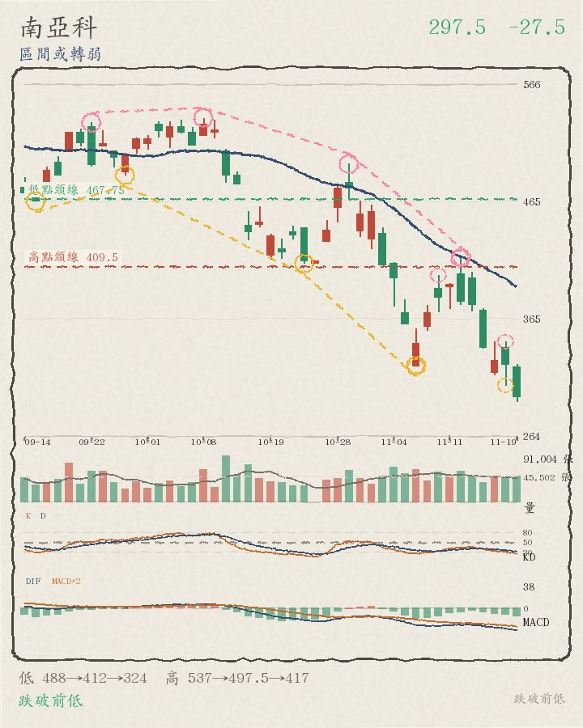
12:31 盤中 349（-7.43%），比加權指數弱 3.14 個百分點、跌破月線 414.675，離高點頸線 409.5 還差 14.8%，轉折還沒走出明顯方向。
- 月線位置：現價 349 在月線 414.675 之下（-15.8%）；5 日線 380.7 也在月線之下（短均在下）；月線向下
- 量能：以已過交易時間推估，今天成交量約是 20 日均量的 0.78 倍（量平），比 20 日均量少很多
- 關鍵價位：高點頸線 409.5 還沒突破，差 14.8%；前一交易日高點 404.5（低於 13.7%）；今天盤中高點 373（低於 6.4%）；今天盤中低點 341（高於 2.3%）
- 轉折結構：低點 488、412、324 與高點 533、537、497.5 都沒有明顯遞增，屬於區間震盪或轉弱；還沒確認的轉折低點 11-06 324、11-13 371.5；還沒確認的轉折高點 11-10 402、11-12 417（圖上虛線小圈）
量平
↑ 回上方清單
華通 2313 上市
196 -9.5（-4.62%）
高點墊高、底部不穩 盤中成交值 102.25 億・全榜第 13 名（上市第 11 名）・相對大盤 -0.33
好條件 1/7：頭頭高
不好條件 5/7：今日下跌、相對大盤弱、在月線之下、跌破昨日低點、月線下彎

12:31 盤中 196（-4.62%），比加權指數弱 0.33 個百分點、跌破月線 206.675，離高點頸線 212.25 還差 7.7%，高點還在墊高（但底部沒同步墊高）。
- 月線位置：現價 196 在月線 206.675 之下（-5.2%）；5 日線 190.2 也在月線之下（短均在下）；月線向下
- 量能：以已過交易時間推估，今天成交量約是 20 日均量的 2.25 倍（爆量），比 20 日均量大不少；下跌卻量增，量價背離
- 關鍵價位：高點頸線 212.25 還沒突破，差 7.7%；前一交易日高點 215.5（低於 9.0%）；今天盤中高點 212（低於 7.5%）；今天盤中低點 193.5（高於 1.3%）
- 轉折結構：高點 235、261、266 墊高（頭頭高），但低點 219、228、149 沒有同步墊高；還沒確認的轉折低點 11-06 149；還沒確認的轉折高點 11-02 209、11-13 215.5（圖上虛線小圈）
創意 3443 上市
7750 -860.0（-9.99%）
高點墊高、底部不穩 盤中成交值 100.98 億・全榜第 14 名（上市第 12 名）・相對大盤 -5.70
好條件 2/7：站上月線、頭頭高
不好條件 4/7：今日下跌、相對大盤弱、跌破昨日低點、月線下彎

12:31 盤中 7750（-9.99%），比加權指數弱 5.70 個百分點、站上月線 7456.75，離高點頸線 8537 還差 9.2%，高點還在墊高（但底部沒同步墊高）。
- 月線位置：現價 7750 在月線 7456.75 之上（+3.9%）；5 日線 7646 也在月線之上（短均在上）；月線向下
- 量能：以已過交易時間推估，今天成交量約是 20 日均量的 0.66 倍（量縮），比 20 日均量少很多
- 關鍵價位：高點頸線 8537 還沒突破，差 9.2%；前一交易日高點 8645（低於 10.4%）；今天盤中高點 8500（低於 8.8%）；今天盤中低點 7750（高於 0.0%）
- 轉折結構：高點 8750、8490、8255 墊高（頭頭高），但低點 7065、7200、5765 沒有同步墊高；還沒確認的轉折低點 11-04 6390、11-06 5765；還沒確認的轉折高點 10-29 8255、11-13 8645（圖上虛線小圈）
台光電 2383 上市
3795 -420.0（-9.96%）
區間或轉弱 盤中成交值 96.05 億・全榜第 15 名（上市第 13 名）・相對大盤 -5.67
好條件 0/7：無
不好條件 5/7：今日下跌、相對大盤弱、在月線之下、跌破昨日低點、月線下彎

12:31 盤中 3795（-9.96%），比加權指數弱 5.67 個百分點、跌破月線 4632.75，離高點頸線 5232.5 還差 27.5%，轉折還沒走出明顯方向。
- 月線位置：現價 3795 在月線 4632.75 之下（-18.1%）；5 日線 4251 也在月線之下（短均在下）；月線向下
- 量能：以已過交易時間推估，今天成交量約是 20 日均量的 0.84 倍（量平），比 20 日均量少很多
- 關鍵價位：高點頸線 5232.5 還沒突破，差 27.5%；前一交易日高點 4510（低於 15.9%）；今天盤中高點 4195（低於 9.5%）；今天盤中低點 3795（高於 0.0%）
- 轉折結構：低點 4855、4930、3690 與高點 6325、5485、5295 都沒有明顯遞增，屬於區間震盪或轉弱；還沒確認的轉折低點 11-06 3690、11-12 4065；還沒確認的轉折高點 11-02 4835、11-11 4565（圖上虛線小圈）
量平
↑ 回上方清單
聯電 2303 上市
97 -4.5（-4.43%）
區間或轉弱 盤中成交值 80.56 億・全榜第 16 名（上市第 14 名）・相對大盤 -0.14
好條件 0/7：無
不好條件 5/7：今日下跌、相對大盤弱、在月線之下、跌破昨日低點、月線下彎

12:31 盤中 97（-4.43%），比加權指數弱 0.14 個百分點、跌破月線 113.03，離高點頸線 166.75 還差 41.8%，轉折還沒走出明顯方向。
- 月線位置：現價 97 在月線 113.03 之下（-14.2%）；5 日線 100.74 也在月線之下（短均在下）；月線向下
- 量能：以已過交易時間推估，今天成交量約是 20 日均量的 0.71 倍（量平），比 20 日均量少很多
- 關鍵價位：高點頸線 166.75 還沒突破，差 41.8%；前一交易日高點 105.5（低於 8.1%）；今天盤中高點 101.5（低於 4.4%）；今天盤中低點 95.5（高於 1.6%）
- 轉折結構：低點 135、151.5、88.6 與高點 145.5、168.5、165 都沒有明顯遞增，屬於區間震盪或轉弱；還沒確認的轉折低點 10-30 107、11-06 88.6；還沒確認的轉折高點 11-12 107.5（圖上虛線小圈）
量平
↑ 回上方清單
日月光投控 3711 上市
560 -38.0（-6.35%）
區間或轉弱 盤中成交值 80.17 億・全榜第 17 名（上市第 15 名）・相對大盤 -2.06
好條件 0/7：無
不好條件 5/7：今日下跌、相對大盤弱、在月線之下、跌破昨日低點、月線下彎

12:31 盤中 560（-6.35%），比加權指數弱 2.06 個百分點、跌破月線 633.65，離高點頸線 700 還差 20.0%，轉折還沒走出明顯方向。
- 月線位置：現價 560 在月線 633.65 之下（-11.6%）；5 日線 593.4 也在月線之下（短均在下）；月線向下
- 量能：以已過交易時間推估，今天成交量約是 20 日均量的 0.77 倍（量平），比 20 日均量少很多
- 關鍵價位：高點頸線 700 還沒突破，差 20.0%；前一交易日高點 625（低於 10.4%）；今天盤中高點 590（低於 5.1%）；今天盤中低點 550（高於 1.8%）
- 轉折結構：低點 715、639、515 與高點 765、699、709 都沒有明顯遞增，屬於區間震盪或轉弱；還沒確認的轉折低點 11-06 515、11-12 580；還沒確認的轉折高點 11-02 692、11-12 630（圖上虛線小圈）
量平
↑ 回上方清單
奇鋐 3017 上市
2740 -300.0（-9.87%）
區間或轉弱 盤中成交值 78.64 億・全榜第 18 名（上市第 16 名）・相對大盤 -5.58
好條件 0/7：無
不好條件 5/7：今日下跌、相對大盤弱、在月線之下、跌破昨日低點、月線下彎

12:31 盤中 2740（-9.87%），比加權指數弱 5.58 個百分點、跌破月線 2995.25，離高點頸線 3087.5 還差 11.3%，轉折還沒走出明顯方向。
- 月線位置：現價 2740 在月線 2995.25 之下（-8.5%）；5 日線 2837 也在月線之下（短均在下）；月線向下
- 量能：以已過交易時間推估，今天成交量約是 20 日均量的 1.20 倍（量增），比 20 日均量大不少；下跌卻量增，量價背離
- 關鍵價位：高點頸線 3087.5 還沒突破，差 11.3%；前一交易日高點 3050（低於 10.2%）；今天盤中高點 3005（低於 8.8%）；今天盤中低點 2740（高於 0.0%）
- 轉折結構：低點 3050、2310、2310 與高點 3600、3700、3450 都沒有明顯遞增，屬於區間震盪或轉弱；還沒確認的轉折低點 11-09 2310、11-12 2750；還沒確認的轉折高點 11-03 3115、11-12 3060（圖上虛線小圈）
量增
↑ 回上方清單
大立光 3008 上市
4780 -530.0（-9.98%）
區間或轉弱 盤中成交值 75.33 億・全榜第 19 名（上市第 17 名）・相對大盤 -5.69
好條件 0/7：無
不好條件 5/7：今日下跌、相對大盤弱、在月線之下、跌破昨日低點、月線下彎

12:31 盤中 4780（-9.98%），比加權指數弱 5.69 個百分點、跌破月線 5542.5，轉折還沒走出明顯方向。
- 月線位置：現價 4780 在月線 5542.5 之下（-13.8%）；5 日線 5136 也在月線之下（短均在下）；月線向下
- 量能：以已過交易時間推估，今天成交量約是 20 日均量的 0.79 倍（量平），比 20 日均量少很多
- 關鍵價位：前一交易日高點 5560（低於 14.0%）；今天盤中高點 5140（低於 7.0%）；今天盤中低點 4780（高於 0.0%）
- 轉折結構：低點 6355、5970、4075 與高點 6750、7460、6370 都沒有明顯遞增，屬於區間震盪或轉弱；還沒確認的轉折低點 11-06 4075；還沒確認的轉折高點 11-13 5560（圖上虛線小圈）
量平
↑ 回上方清單
精材 3374 上櫃
467.5 -51.5（-9.92%）
高點墊高、底部不穩 盤中成交值 75.33 億・全榜第 20 名（上櫃第 3 名）・相對大盤 -5.63
好條件 2/7：站上月線、頭頭高
不好條件 4/7：今日下跌、相對大盤弱、跌破昨日低點、月線下彎
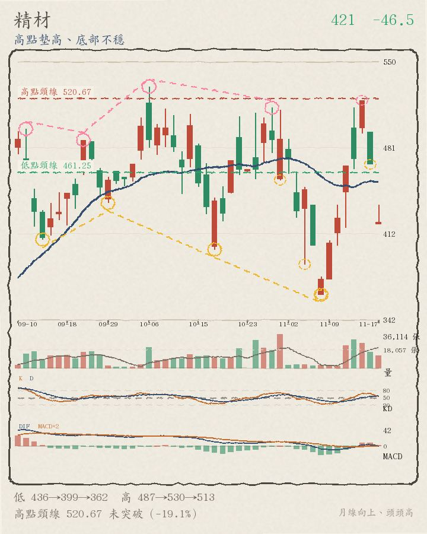
12:31 盤中 467.5（-9.92%），比加權指數弱 5.63 個百分點、站上月線 452.4，離高點頸線 520.67 還差 10.2%，高點還在墊高（但底部沒同步墊高）。
- 月線位置：現價 467.5 在月線 452.4 之上（+3.3%）；5 日線 457.2 也在月線之上（短均在上）；月線向下
- 量能：以已過交易時間推估，今天成交量約是 20 日均量的 1.53 倍（爆量），比 20 日均量大不少；下跌卻量增，量價背離
- 關鍵價位：高點頸線 520.67 還沒突破，差 10.2%；前一交易日高點 519（低於 9.9%）；今天盤中高點 493.5（低於 5.3%）；今天盤中低點 467.5（高於 0.0%）
- 轉折結構：高點 487、530、513 墊高（頭頭高），但低點 436.5、399、362.5 沒有同步墊高；還沒確認的轉折低點 11-04 387、11-06 362.5；還沒確認的轉折高點 10-29 513、11-13 519（圖上虛線小圈）
臻鼎-KY 4958 上市
402.5 -37.5（-8.52%）
區間或轉弱 盤中成交值 65.05 億・全榜第 21 名（上市第 18 名）・相對大盤 -4.23
好條件 0/7：無
不好條件 5/7：今日下跌、相對大盤弱、在月線之下、跌破昨日低點、月線下彎

12:31 盤中 402.5（-8.52%），比加權指數弱 4.23 個百分點、跌破月線 486.425，離高點頸線 502 還差 19.8%，轉折還沒走出明顯方向。
- 月線位置：現價 402.5 在月線 486.425 之下（-17.2%）；5 日線 431.9 也在月線之下（短均在下）；月線向下
- 量能：以已過交易時間推估，今天成交量約是 20 日均量的 0.73 倍（量平），比 20 日均量少很多
- 關鍵價位：高點頸線 502 還沒突破，差 19.8%；前一交易日高點 463.5（低於 13.2%）；今天盤中高點 436（低於 7.7%）；今天盤中低點 397（高於 1.4%）
- 轉折結構：低點 463.5、518、355 與高點 505、613、614 都沒有明顯遞增，屬於區間震盪或轉弱；還沒確認的轉折低點 11-06 355、11-12 429；還沒確認的轉折高點 11-02 499、11-12 466.5（圖上虛線小圈）
量平
↑ 回上方清單
玉晶光 3406 上市
908 -79.0（-8.00%）
區間或轉弱 盤中成交值 62.67 億・全榜第 22 名（上市第 19 名）・相對大盤 -3.71
好條件 0/7：無
不好條件 5/7：今日下跌、相對大盤弱、在月線之下、跌破昨日低點、月線下彎

12:31 盤中 908（-8.00%），比加權指數弱 3.71 個百分點、跌破月線 1037.2，離高點頸線 1065 還差 14.7%，轉折還沒走出明顯方向。
- 月線位置：現價 908 在月線 1037.2 之下（-12.5%）；5 日線 941.6 也在月線之下（短均在下）；月線向下
- 量能：以已過交易時間推估，今天成交量約是 20 日均量的 1.10 倍（量增），比 20 日均量大一些；下跌卻量增，量價背離
- 關鍵價位：高點頸線 1065 還沒突破，差 14.7%；前一交易日高點 1075（低於 15.5%）；今天盤中高點 982（低於 7.5%）；今天盤中低點 892（高於 1.8%）
- 轉折結構：低點 1010、1005、762 與高點 1220、1330、1330 都沒有明顯遞增，屬於區間震盪或轉弱；還沒確認的轉折低點 11-06 762；還沒確認的轉折高點 10-29 1330、11-12 1085（圖上虛線小圈）
量增
↑ 回上方清單
昇達科 3491 上櫃
1460 +30.0（+2.10%）
高點墊高、底部不穩 盤中成交值 56.27 億・全榜第 23 名（上櫃第 4 名）・相對大盤 +6.39
好條件 3/7：站上月線、頭頭高、攻擊量（量增＋上漲）
不好條件 1/7：月線下彎
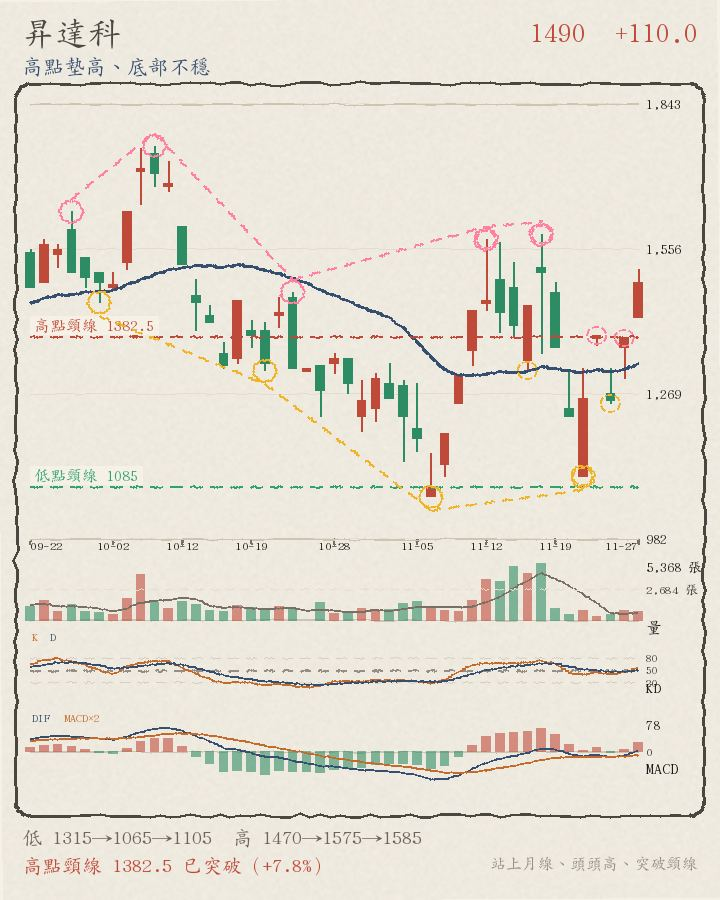
12:31 盤中 1460（+2.10%），比加權指數強 6.39 個百分點、站上月線 1313.25，離高點頸線 1595 還差 8.5%，高點還在墊高（但底部沒同步墊高）。
- 月線位置：現價 1460 在月線 1313.25 之上（+11.2%）；5 日線 1363 也在月線之上（短均在上）；月線向下
- 量能：以已過交易時間推估，今天成交量約是 20 日均量的 3.80 倍（爆量），比 20 日均量大不少；上漲又量增，量價配合
- 關鍵價位：高點頸線 1595 還沒突破，差 8.5%；前一交易日高點 1570（低於 7.0%）；今天盤中高點 1530（低於 4.6%）；今天盤中低點 1415（高於 3.2%）
- 轉折結構：高點 1630、1760、1470 墊高（頭頭高），但低點 1450、1315、1065 沒有同步墊高；還沒確認的轉折低點 11-06 1065、11-13 1390；還沒確認的轉折高點 11-03 1330、11-12 1575（圖上虛線小圈）
金像電 2368 上市
927 -103.0（-10.00%）
區間或轉弱 盤中成交值 56.18 億・全榜第 24 名（上市第 20 名）・相對大盤 -5.71
好條件 0/7：無
不好條件 5/7：今日下跌、相對大盤弱、在月線之下、跌破昨日低點、月線下彎

12:31 盤中 927（-10.00%），比加權指數弱 5.71 個百分點、跌破月線 1055.6，離高點頸線 1083.33 還差 14.4%，轉折還沒走出明顯方向。
- 月線位置：現價 927 在月線 1055.6 之下（-12.2%）；5 日線 986.4 也在月線之下（短均在下）；月線向下
- 量能：以已過交易時間推估，今天成交量約是 20 日均量的 0.74 倍（量平），比 20 日均量少很多
- 關鍵價位：高點頸線 1083.33 還沒突破，差 14.4%；前一交易日高點 1070（低於 13.4%）；今天盤中高點 1005（低於 7.8%）；今天盤中低點 927（高於 0.0%）
- 轉折結構：低點 950、1120、782 與高點 1310、1295、1190 都沒有明顯遞增，屬於區間震盪或轉弱；還沒確認的轉折低點 11-06 782、11-12 968；還沒確認的轉折高點 11-02 1080、11-12 1085（圖上虛線小圈）
量平
↑ 回上方清單
友達 2409 上市
28.2 -2.2（-7.24%）
區間或轉弱 盤中成交值 55.03 億・全榜第 25 名（上市第 21 名）・相對大盤 -2.95
好條件 0/7：無
不好條件 5/7：今日下跌、相對大盤弱、在月線之下、跌破昨日低點、月線下彎

12:31 盤中 28.2（-7.24%），比加權指數弱 2.95 個百分點、跌破月線 31.835，離高點頸線 37.03 還差 23.8%，轉折還沒走出明顯方向。
- 月線位置：現價 28.2 在月線 31.835 之下（-11.4%）；5 日線 28.83 也在月線之下（短均在下）；月線向下
- 量能：以已過交易時間推估，今天成交量約是 20 日均量的 0.91 倍（量平），比 20 日均量少一些
- 關鍵價位：高點頸線 37.03 還沒突破，差 23.8%；前一交易日高點 30.65（低於 8.0%）；今天盤中高點 30（低於 6.0%）；今天盤中低點 27.55（高於 2.4%）
- 轉折結構：低點 33.75、34.45、24.55 與高點 43.55、37.8、36.65 都沒有明顯遞增，屬於區間震盪或轉弱；還沒確認的轉折低點 11-06 24.55；還沒確認的轉折高點 11-10 29.25、11-12 31.5（圖上虛線小圈）
量平
↑ 回上方清單
貿聯-KY 3665 上市
1505 -15.0（-0.99%）
區間或轉弱 盤中成交值 52.89 億・全榜第 26 名（上市第 22 名）・相對大盤 +3.30
好條件 0/7：無
不好條件 4/7：今日下跌、在月線之下、跌破昨日低點、月線下彎

12:31 盤中 1505（-0.99%），比加權指數強 3.30 個百分點、跌破月線 1681，離高點頸線 1652.5 還差 8.9%，轉折還沒走出明顯方向。
- 月線位置：現價 1505 在月線 1681 之下（-10.5%）；5 日線 1513 也在月線之下（短均在下）；月線向下
- 量能：以已過交易時間推估，今天成交量約是 20 日均量的 1.43 倍（量增），比 20 日均量大不少；下跌卻量增，量價背離
- 關鍵價位：高點頸線 1652.5 還沒突破，差 8.9%；前一交易日高點 1600（低於 5.9%）；今天盤中高點 1595（低於 5.6%）；今天盤中低點 1465（高於 2.7%）
- 轉折結構：低點 1930、1810、1295 與高點 2375、2685、2080 都沒有明顯遞增，屬於區間震盪或轉弱；還沒確認的轉折低點 11-02 1555、11-09 1295；還沒確認的轉折高點 11-03 1675、11-12 1630（圖上虛線小圈）
量增
↑ 回上方清單
華邦電 2344 上市
115.5 -9.5（-7.60%）
區間或轉弱 盤中成交值 50.67 億・全榜第 27 名（上市第 23 名）・相對大盤 -3.31
好條件 0/7：無
不好條件 5/7：今日下跌、相對大盤弱、在月線之下、跌破昨日低點、月線下彎

12:31 盤中 115.5（-7.60%），比加權指數弱 3.31 個百分點、跌破月線 148.1，離高點頸線 141.5 還差 18.4%，轉折還沒走出明顯方向。
- 月線位置：現價 115.5 在月線 148.1 之下（-22.0%）；5 日線 131.3 也在月線之下（短均在下）；月線向下
- 量能：以已過交易時間推估，今天成交量約是 20 日均量的 0.85 倍（量平），比 20 日均量少一些
- 關鍵價位：高點頸線 141.5 還沒突破，差 18.4%；前一交易日高點 134（低於 13.8%）；今天盤中高點 123.5（低於 6.5%）；今天盤中低點 113（高於 2.2%）
- 轉折結構：低點 151、151、115 與高點 184、178.5、142 都沒有明顯遞增，屬於區間震盪或轉弱；還沒確認的轉折低點 11-11 127、11-13 125；還沒確認的轉折高點 11-10 142、11-12 141（圖上虛線小圈）
量平
↑ 回上方清單
聯茂 6213 上市
480 -53.0（-9.94%）
高點墊高、底部不穩 盤中成交值 48.57 億・全榜第 28 名（上市第 24 名）・相對大盤 -5.65
好條件 1/7：頭頭高
不好條件 6/7：跌破前低、今日下跌、相對大盤弱、在月線之下、跌破昨日低點、月線下彎

12:31 盤中 480（-9.94%），比加權指數弱 5.65 個百分點、跌破月線 661.6，離高點頸線 593 還差 19.1%，高點還在墊高（但底部沒同步墊高）。
- 月線位置：現價 480 在月線 661.6 之下（-27.4%）；5 日線 538.8 也在月線之下（短均在下）；月線向下
- 量能：以已過交易時間推估，今天成交量約是 20 日均量的 0.75 倍（量平），比 20 日均量少很多
- 關鍵價位：已跌破前一個轉折低點；高點頸線 593 還在現價上方 19.1%；前一交易日高點 573（低於 16.2%）；今天盤中高點 519（低於 7.5%）；今天盤中低點 480（高於 0.0%）
- 轉折結構：高點 555、858、885 墊高（頭頭高），但低點 731、721、481.5 沒有同步墊高；還沒確認的轉折低點 11-09 481.5、11-12 522；還沒確認的轉折高點 11-10 584、11-12 602（圖上虛線小圈）
南電 8046 上市
880 -97.0（-9.93%）
區間或轉弱 盤中成交值 47.75 億・全榜第 29 名（上市第 25 名）・相對大盤 -5.64
好條件 0/7：無
不好條件 5/7：今日下跌、相對大盤弱、在月線之下、跌破昨日低點、月線下彎

12:31 盤中 880（-9.93%），比加權指數弱 5.64 個百分點、跌破月線 1152.7，離高點頸線 1102.5 還差 20.2%，轉折還沒走出明顯方向。
- 月線位置：現價 880 在月線 1152.7 之下（-23.7%）；5 日線 993.4 也在月線之下（短均在下）；月線向下
- 量能：以已過交易時間推估，今天成交量約是 20 日均量的 0.69 倍（量縮），比 20 日均量少很多
- 關鍵價位：高點頸線 1102.5 還沒突破，差 20.2%；前一交易日高點 1055（低於 16.6%）；今天盤中高點 966（低於 8.9%）；今天盤中低點 880（高於 0.0%）
- 轉折結構：低點 1025、1050、867 與高點 1125、1560、1400 都沒有明顯遞增，屬於區間震盪或轉弱；還沒確認的轉折低點 11-09 867、11-12 972；還沒確認的轉折高點 11-02 1220、11-11 1080（圖上虛線小圈）
量縮
↑ 回上方清單
台燿 6274 上櫃
877 -97.0（-9.96%）
區間或轉弱 盤中成交值 46.61 億・全榜第 30 名（上櫃第 5 名）・相對大盤 -5.67
好條件 0/7：無
不好條件 6/7：跌破前低、今日下跌、相對大盤弱、在月線之下、跌破昨日低點、月線下彎

12:31 盤中 877（-9.96%），比加權指數弱 5.67 個百分點、跌破月線 1235.25，離高點頸線 1446.67 還差 39.4%，轉折還沒走出明顯方向。
- 月線位置：現價 877 在月線 1235.25 之下（-29.0%）；5 日線 986.8 也在月線之下（短均在下）；月線向下
- 量能：以已過交易時間推估，今天成交量約是 20 日均量的 0.51 倍（量縮），比 20 日均量少很多
- 關鍵價位：已跌破前一個轉折低點；高點頸線 1446.67 還在現價上方 39.4%；前一交易日高點 1030（低於 14.9%）；今天盤中高點 962（低於 8.8%）；今天盤中低點 877（高於 0.0%）
- 轉折結構：低點 1295、1275、897 與高點 1460、1835、1450 都沒有明顯遞增，屬於區間震盪或轉弱；還沒確認的轉折低點 11-09 897、11-12 954；還沒確認的轉折高點 10-29 1450、11-12 1080（圖上虛線小圈）
緯穎 6669 上市
1550 -85.0（-5.20%）
區間或轉弱 盤中成交值 44.24 億・全榜第 31 名（上市第 26 名）・相對大盤 -0.91
好條件 0/7：無
不好條件 5/7：今日下跌、相對大盤弱、在月線之下、跌破昨日低點、月線下彎

12:31 盤中 1550（-5.20%），比加權指數弱 0.91 個百分點、跌破月線 1780，離高點頸線 1722.5 還差 10.0%，轉折還沒走出明顯方向。
- 月線位置：現價 1550 在月線 1780 之下（-12.9%）；5 日線 1642 也在月線之下（短均在下）；月線向下
- 量能：以已過交易時間推估，今天成交量約是 20 日均量的 0.73 倍（量平），比 20 日均量少很多
- 關鍵價位：高點頸線 1722.5 還沒突破，差 10.0%；前一交易日高點 1700（低於 8.8%）；今天盤中高點 1620（低於 4.3%）；今天盤中低點 1520（高於 2.0%）
- 轉折結構：低點 2080、1795、1485 與高點 2335、2020、1990 都沒有明顯遞增，屬於區間震盪或轉弱；還沒確認的轉折低點 11-06 1485、11-12 1550；還沒確認的轉折高點 11-10 1730、11-12 1715（圖上虛線小圈）
量平
↑ 回上方清單
智原 3035 上市
192 -4.0（-2.04%）
區間或轉弱 盤中成交值 43.16 億・全榜第 32 名（上市第 27 名）・相對大盤 +2.25
好條件 0/7：無
不好條件 3/7：今日下跌、在月線之下、月線下彎
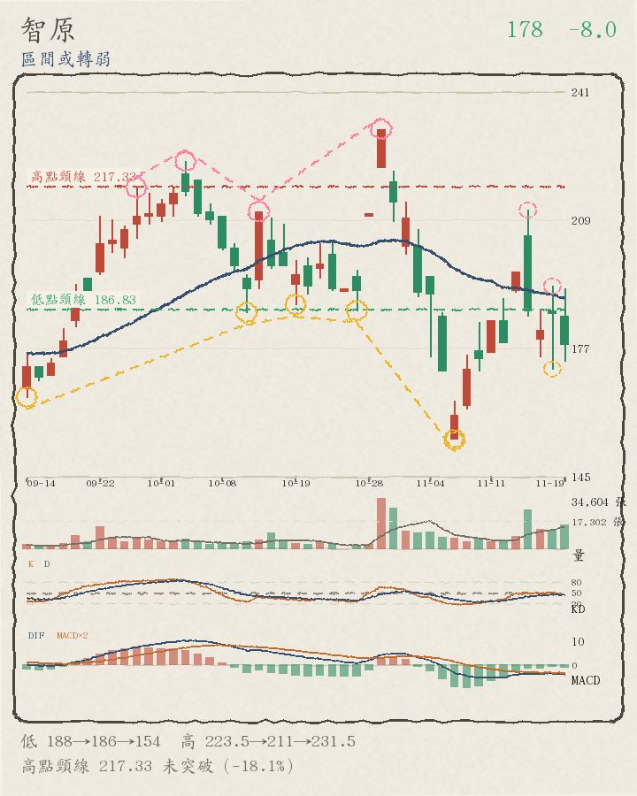
12:31 盤中 192（-2.04%），比加權指數強 2.25 個百分點、跌破月線 192.125，離高點頸線 220.25 還差 12.8%，轉折還沒走出明顯方向。
- 月線位置：現價 192 在月線 192.125 之下（-0.1%）；5 日線 181 也在月線之下（短均在下）；月線向下
- 量能：以已過交易時間推估，今天成交量約是 20 日均量的 3.30 倍（爆量），比 20 日均量大不少；下跌卻量增，量價背離
- 關鍵價位：高點頸線 220.25 還沒突破，差 12.8%；前一交易日高點 196（低於 2.0%）；今天盤中高點 211.5（低於 9.2%）；今天盤中低點 187（高於 2.7%）
- 轉折結構：低點 188、186.5、154.5 與高點 223.5、211、231.5 都沒有明顯遞增，屬於區間震盪或轉弱；還沒確認的轉折低點 11-06 154.5；還沒確認的轉折高點 10-29 231.5、11-13 196（圖上虛線小圈）
健策 3653 上市
4815 -530.0（-9.92%）
區間或轉弱 盤中成交值 43.14 億・全榜第 33 名（上市第 28 名）・相對大盤 -5.63
好條件 0/7：無
不好條件 6/7：跌破前低、今日下跌、相對大盤弱、在月線之下、跌破昨日低點、月線下彎

12:31 盤中 4815（-9.92%），比加權指數弱 5.63 個百分點、跌破月線 6100.25，離高點頸線 6536.67 還差 26.3%，轉折還沒走出明顯方向。
- 月線位置：現價 4815 在月線 6100.25 之下（-21.1%）；5 日線 5720 也在月線之下（短均在下）；月線向下
- 量能：以已過交易時間推估，今天成交量約是 20 日均量的 0.53 倍（量縮），比 20 日均量少很多
- 關鍵價位：已跌破前一個轉折低點；高點頸線 6536.67 還在現價上方 26.3%；前一交易日高點 5980（低於 19.5%）；今天盤中高點 5335（低於 9.7%）；今天盤中低點 4815（高於 0.0%）
- 轉折結構：低點 6760、5710、4970 與高點 6985、6655、6595 都沒有明顯遞增，屬於區間震盪或轉弱；還沒確認的轉折低點 11-09 4970、11-13 5290；還沒確認的轉折高點 11-04 6595、11-11 6360（圖上虛線小圈）
旺矽 6223 上櫃
4415 -255.0（-5.46%）
區間或轉弱 盤中成交值 42.03 億・全榜第 34 名（上櫃第 6 名）・相對大盤 -1.17
好條件 0/7：無
不好條件 5/7：今日下跌、相對大盤弱、在月線之下、跌破昨日低點、月線下彎

12:31 盤中 4415（-5.46%），比加權指數弱 1.17 個百分點、跌破月線 4560.75，離高點頸線 5125 還差 13.9%，轉折還沒走出明顯方向。
- 月線位置：現價 4415 在月線 4560.75 之下（-3.2%）；5 日線 4317 也在月線之下（短均在下）；月線向下
- 量能：以已過交易時間推估，今天成交量約是 20 日均量的 1.14 倍（量增），比 20 日均量大一些；下跌卻量增，量價背離
- 關鍵價位：高點頸線 5125 還沒突破，差 13.9%；前一交易日高點 5100（低於 13.4%）；今天盤中高點 4600（低於 4.0%）；今天盤中低點 4310（高於 2.4%）
- 轉折結構：低點 5090、4995、3355 與高點 5860、6160、5150 都沒有明顯遞增，屬於區間震盪或轉弱；還沒確認的轉折低點 10-30 4390、11-06 3355；還沒確認的轉折高點 11-02 4790、11-13 5100（圖上虛線小圈）
量增
↑ 回上方清單
緯創 3231 上市
162.5 -8.5（-4.97%）
高點墊高、底部不穩 盤中成交值 40.27 億・全榜第 35 名（上市第 29 名）・相對大盤 -0.68
好條件 1/7：頭頭高
不好條件 5/7：今日下跌、相對大盤弱、在月線之下、跌破昨日低點、月線下彎

12:31 盤中 162.5（-4.97%），比加權指數弱 0.68 個百分點、跌破月線 180.05，離高點頸線 183 還差 11.2%，高點還在墊高（但底部沒同步墊高）。
- 月線位置：現價 162.5 在月線 180.05 之下（-9.8%）；5 日線 171 也在月線之下（短均在下）；月線向下
- 量能：以已過交易時間推估，今天成交量約是 20 日均量的 0.84 倍（量平），比 20 日均量少很多
- 關鍵價位：高點頸線 183 還沒突破，差 11.2%；前一交易日高點 175（低於 7.1%）；今天盤中高點 170（低於 4.4%）；今天盤中低點 160（高於 1.6%）
- 轉折結構：高點 190.5、194.5、199.5 墊高（頭頭高），但低點 182.5、173.5、152 沒有同步墊高；還沒確認的轉折低點 11-06 152、11-13 169；還沒確認的轉折高點 11-09 174.5、11-12 181（圖上虛線小圈）
致茂 2360 上市
1290 -110.0（-7.86%）
區間或轉弱 盤中成交值 39.59 億・全榜第 36 名（上市第 30 名）・相對大盤 -3.57
好條件 0/7：無
不好條件 5/7：今日下跌、相對大盤弱、在月線之下、跌破昨日低點、月線下彎

12:31 盤中 1290（-7.86%），比加權指數弱 3.57 個百分點、跌破月線 1684.25，離高點頸線 2090 還差 38.3%，轉折還沒走出明顯方向。
- 月線位置：現價 1290 在月線 1684.25 之下（-23.4%）；5 日線 1350 也在月線之下（短均在下）；月線向下
- 量能：以已過交易時間推估，今天成交量約是 20 日均量的 1.16 倍（量增），比 20 日均量大不少；下跌卻量增，量價背離
- 關鍵價位：高點頸線 2090 還沒突破，差 38.3%；前一交易日高點 1480（低於 12.8%）；今天盤中高點 1385（低於 6.9%）；今天盤中低點 1260（高於 2.4%）
- 轉折結構：低點 2025、1945、1190 與高點 2560、2110、2070 都沒有明顯遞增，屬於區間震盪或轉弱；還沒確認的轉折低點 11-09 1190、11-13 1340；還沒確認的轉折高點 10-29 2070、11-12 1505（圖上虛線小圈）
量增
↑ 回上方清單
群聯 8299 上櫃
1555 -85.0（-5.18%）
區間或轉弱 盤中成交值 38.11 億・全榜第 37 名（上櫃第 7 名）・相對大盤 -0.89
好條件 0/7：無
不好條件 5/7：今日下跌、相對大盤弱、在月線之下、跌破昨日低點、月線下彎
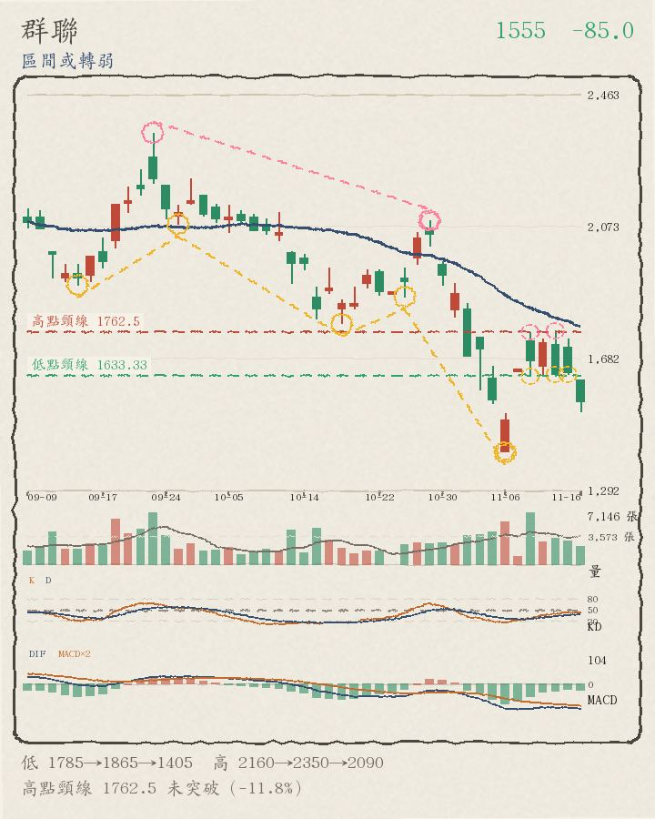
12:31 盤中 1555（-5.18%），比加權指數弱 0.89 個百分點、跌破月線 1793.25，離高點頸線 1762.5 還差 11.8%，轉折還沒走出明顯方向。
- 月線位置：現價 1555 在月線 1793.25 之下（-13.3%）；5 日線 1666 也在月線之下（短均在下）；月線向下
- 量能：以已過交易時間推估，今天成交量約是 20 日均量的 0.95 倍（量平），跟 20 日均量差不多
- 關鍵價位：高點頸線 1762.5 還沒突破，差 11.8%；前一交易日高點 1740（低於 10.6%）；今天盤中高點 1620（低於 4.0%）；今天盤中低點 1525（高於 2.0%）
- 轉折結構：低點 1785、1865、1405 與高點 2160、2350、2090 都沒有明顯遞增，屬於區間震盪或轉弱；還沒確認的轉折低點 11-12 1635、11-13 1635；還沒確認的轉折高點 11-10 1760、11-12 1765（圖上虛線小圈）
量平
↑ 回上方清單
群創 3481 上市
37.5 -2.5（-6.13%）
區間或轉弱 盤中成交值 37.83 億・全榜第 38 名（上市第 31 名）・相對大盤 -1.84
好條件 0/7：無
不好條件 5/7：今日下跌、相對大盤弱、在月線之下、跌破昨日低點、月線下彎

12:31 盤中 37.5（-6.13%），比加權指數弱 1.84 個百分點、跌破月線 43.31，離高點頸線 49.2 還差 23.8%，轉折還沒走出明顯方向。
- 月線位置：現價 37.5 在月線 43.31 之下（-13.4%）；5 日線 39.65 也在月線之下（短均在下）；月線向下
- 量能：以已過交易時間推估，今天成交量約是 20 日均量的 0.94 倍（量平），比 20 日均量少一些
- 關鍵價位：高點頸線 49.2 還沒突破，差 23.8%；前一交易日高點 41.15（低於 8.9%）；今天盤中高點 39.9（低於 6.0%）；今天盤中低點 36.8（高於 1.9%）
- 轉折結構：低點 48.55、45.65、34.2 與高點 52.2、56.2、49.7 都沒有明顯遞增，屬於區間震盪或轉弱；還沒確認的轉折低點 11-06 34.2、11-12 38.85；還沒確認的轉折高點 11-10 41.4、11-12 43.3（圖上虛線小圈）
量平
↑ 回上方清單
智邦 2345 上市
1390 -130.0（-8.55%）
區間或轉弱 盤中成交值 37.2 億・全榜第 39 名（上市第 32 名）・相對大盤 -4.26
好條件 0/7：無
不好條件 5/7：今日下跌、相對大盤弱、在月線之下、跌破昨日低點、月線下彎

12:31 盤中 1390（-8.55%），比加權指數弱 4.26 個百分點、跌破月線 1654.25，轉折還沒走出明顯方向。
- 月線位置：現價 1390 在月線 1654.25 之下（-16.0%）；5 日線 1514 也在月線之下（短均在下）；月線向下
- 量能：以已過交易時間推估，今天成交量約是 20 日均量的 0.81 倍（量平），比 20 日均量少很多
- 關鍵價位：前一交易日高點 1615（低於 13.9%）；今天盤中高點 1505（低於 7.6%）；今天盤中低點 1370（高於 1.5%）
- 轉折結構：低點 1970、1910、1245 與高點 2145、2055、1875 都沒有明顯遞增，屬於區間震盪或轉弱；還沒確認的轉折低點 11-06 1245、11-13 1505；還沒確認的轉折高點 10-29 1875、11-12 1665（圖上虛線小圈）
量平
↑ 回上方清單
廣達 2382 上市
266 -10.5（-3.80%）
區間或轉弱 盤中成交值 36.42 億・全榜第 40 名（上市第 33 名）・相對大盤 +0.49
好條件 0/7：無
不好條件 6/7：跌破前低、今日下跌、在月線之下、貼近今日低點（1% 內）、跌破昨日低點、月線下彎

12:31 盤中 266（-3.80%），比加權指數強 0.49 個百分點、跌破月線 309.675，離高點頸線 304 還差 12.5%，轉折還沒走出明顯方向。
- 月線位置：現價 266 在月線 309.675 之下（-14.1%）；5 日線 289.6 也在月線之下（短均在下）；月線向下
- 量能：以已過交易時間推估，今天成交量約是 20 日均量的 1.21 倍（量增），比 20 日均量大不少；下跌卻量增，量價背離
- 關鍵價位：已跌破前一個轉折低點；高點頸線 304 還在現價上方 12.5%；前一交易日高點 283.5（低於 6.2%）；今天盤中高點 276.5（低於 3.8%）；今天盤中低點 264（高於 0.8%）
- 轉折結構：低點 311、311、272 與高點 349、337.5、338 都沒有明顯遞增，屬於區間震盪或轉弱；還沒確認的轉折低點 11-06 272、11-13 276.5；還沒確認的轉折高點 11-09 304、11-10 304（圖上虛線小圈）
京元電子 2449 上市
192.5 -21.0（-9.84%）
區間或轉弱 盤中成交值 36.29 億・全榜第 41 名（上市第 34 名）・相對大盤 -5.55
好條件 0/7：無
不好條件 6/7：跌破前低、今日下跌、相對大盤弱、在月線之下、跌破昨日低點、月線下彎

12:31 盤中 192.5（-9.84%），比加權指數弱 5.55 個百分點、跌破月線 248.275，離高點頸線 284 還差 32.2%，轉折還沒走出明顯方向。
- 月線位置：現價 192.5 在月線 248.275 之下（-22.5%）；5 日線 219.1 也在月線之下（短均在下）；月線向下
- 量能：以已過交易時間推估，今天成交量約是 20 日均量的 1.08 倍（量平），比 20 日均量大一些
- 關鍵價位：已跌破前一個轉折低點；高點頸線 284 還在現價上方 32.2%；前一交易日高點 229.5（低於 16.1%）；今天盤中高點 205（低於 6.1%）；今天盤中低點 192.5（高於 0.0%）
- 轉折結構：低點 284、255、201 與高點 330、310、284.5 都沒有明顯遞增，屬於區間震盪或轉弱；還沒確認的轉折低點 11-09 201、11-13 212.5；還沒確認的轉折高點 11-02 263、11-12 235（圖上虛線小圈）
華新科 2492 上市
257.5 -28.5（-9.97%）
區間或轉弱 盤中成交值 36.17 億・全榜第 42 名（上市第 35 名）・相對大盤 -5.68
好條件 0/7：無
不好條件 5/7：今日下跌、相對大盤弱、在月線之下、跌破昨日低點、月線下彎
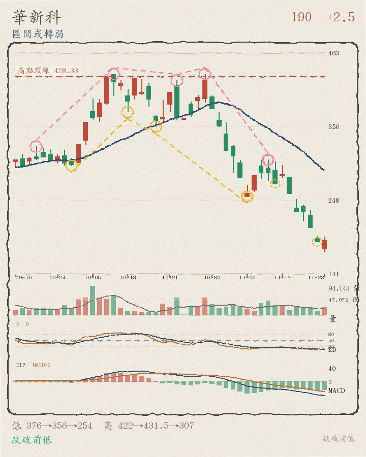
12:31 盤中 257.5（-9.97%），比加權指數弱 5.68 個百分點、跌破月線 339.55，離高點頸線 428.33 還差 39.9%，轉折還沒走出明顯方向。
- 月線位置：現價 257.5 在月線 339.55 之下（-24.2%）；5 日線 283.7 也在月線之下（短均在下）；月線向下
- 量能：以已過交易時間推估，今天成交量約是 20 日均量的 0.64 倍（量縮），比 20 日均量少很多
- 關鍵價位：高點頸線 428.33 還沒突破，差 39.9%；前一交易日高點 299（低於 13.9%）；今天盤中高點 281.5（低於 8.5%）；今天盤中低點 257.5（高於 0.0%）
- 轉折結構：低點 376.5、355.5、253.5 與高點 431.5、422、431.5 都沒有明顯遞增，屬於區間震盪或轉弱；還沒確認的轉折低點 11-06 253.5、11-12 272；還沒確認的轉折高點 10-29 431.5、11-11 307（圖上虛線小圈）
量縮
↑ 回上方清單
川湖 2059 上市
7185 -695.0（-8.82%）
區間或轉弱 盤中成交值 35.21 億・全榜第 43 名（上市第 36 名）・相對大盤 -4.53
好條件 0/7：無
不好條件 7/7：跌破前低、今日下跌、相對大盤弱、在月線之下、貼近今日低點（1% 內）、跌破昨日低點、月線下彎

12:31 盤中 7185（-8.82%），比加權指數弱 4.53 個百分點、跌破月線 9161.25，離高點頸線 10435 還差 31.1%，轉折還沒走出明顯方向。
- 月線位置：現價 7185 在月線 9161.25 之下（-21.6%）；5 日線 8270 也在月線之下（短均在下）；月線向下
- 量能：以已過交易時間推估，今天成交量約是 20 日均量的 1.02 倍（量平），跟 20 日均量差不多
- 關鍵價位：已跌破前一個轉折低點；高點頸線 10435 還在現價上方 31.1%；前一交易日高點 8410（低於 14.6%）；今天盤中高點 7710（低於 6.8%）；今天盤中低點 7115（高於 1.0%）
- 轉折結構：低點 11700、9500、7200 與高點 13500、10580、10290 都沒有明顯遞增，屬於區間震盪或轉弱；還沒確認的轉折低點 11-06 7200、11-13 7810；還沒確認的轉折高點 11-03 9850、11-12 9100（圖上虛線小圈）
藥華藥 6446 上市
1320 -60.0（-4.35%）
高點墊高、底部不穩 盤中成交值 35.15 億・全榜第 44 名（上市第 37 名）・相對大盤 -0.06
好條件 3/7：站上月線、月線向上、頭頭高
不好條件 3/7：今日下跌、相對大盤弱、跌破昨日低點

12:31 盤中 1320（-4.35%），比加權指數弱 0.06 個百分點、站上月線 1237，離高點頸線 1400 還差 5.7%，高點還在墊高（但底部沒同步墊高）。
- 月線位置：現價 1320 在月線 1237 之上（+6.7%）；5 日線 1346 也在月線之上（短均在上）；月線向上
- 量能：以已過交易時間推估，今天成交量約是 20 日均量的 1.10 倍（量增），比 20 日均量大一些；下跌卻量增，量價背離
- 關鍵價位：高點頸線 1400 還沒突破，差 5.7%；前一交易日高點 1405（低於 6.0%）；今天盤中高點 1385（低於 4.7%）；今天盤中低點 1295（高於 1.9%）
- 轉折結構：高點 1235、1300、1255 墊高（頭頭高），但低點 1155、1145、1075 沒有同步墊高；還沒確認的轉折低點 11-06 1075、11-11 1235；還沒確認的轉折高點 11-09 1390、11-12 1410（圖上虛線小圈）
大量 3167 上市
742 -82.0（-9.95%）
區間或轉弱 盤中成交值 35.08 億・全榜第 45 名（上市第 38 名）・相對大盤 -5.66
好條件 0/7：無
不好條件 5/7：今日下跌、相對大盤弱、在月線之下、跌破昨日低點、月線下彎
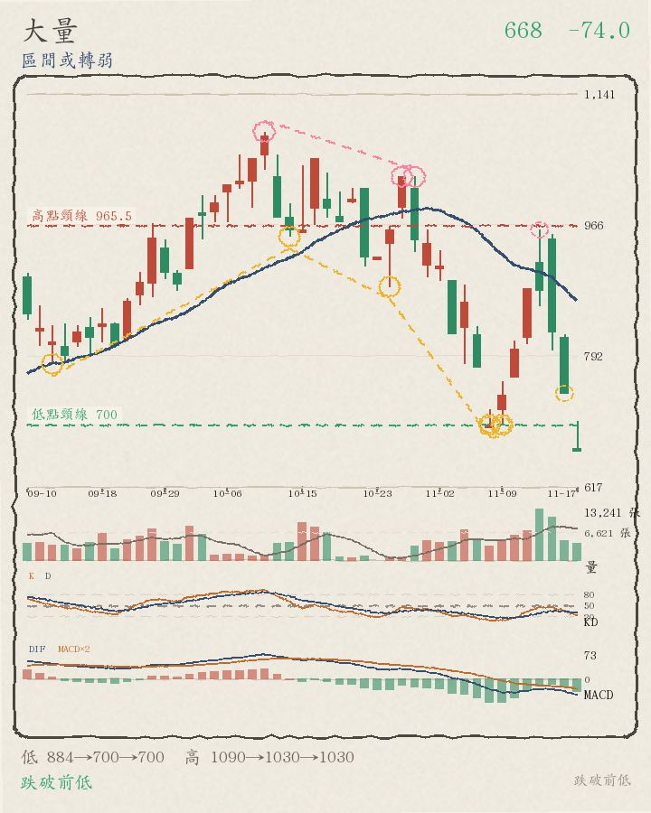
12:31 盤中 742（-9.95%），比加權指數弱 5.66 個百分點、跌破月線 896.9，離高點頸線 965.5 還差 23.1%，轉折還沒走出明顯方向。
- 月線位置：現價 742 在月線 896.9 之下（-17.3%）；5 日線 824.8 也在月線之下（短均在下）；月線向下
- 量能：以已過交易時間推估，今天成交量約是 20 日均量的 1.19 倍（量增），比 20 日均量大不少；下跌卻量增，量價背離
- 關鍵價位：高點頸線 965.5 還沒突破，差 23.1%；前一交易日高點 953（低於 22.1%）；今天盤中高點 820（低於 9.5%）；今天盤中低點 742（高於 0.0%）
- 轉折結構：低點 884、700、700 與高點 1090、1030、1030 都沒有明顯遞增，屬於區間震盪或轉弱；還沒確認的轉折低點 11-09 700、11-13 800；還沒確認的轉折高點 10-29 1030、11-12 960（圖上虛線小圈）
量增
↑ 回上方清單
雙鴻 3324 上櫃
1030 -110.0（-9.65%）
區間或轉弱 盤中成交值 34.43 億・全榜第 46 名（上櫃第 8 名）・相對大盤 -5.36
好條件 0/7：無
不好條件 6/7：跌破前低、今日下跌、相對大盤弱、在月線之下、跌破昨日低點、月線下彎

12:31 盤中 1030（-9.65%），比加權指數弱 5.36 個百分點、跌破月線 1304.75，離高點頸線 1511.67 還差 31.9%，轉折還沒走出明顯方向。
- 月線位置：現價 1030 在月線 1304.75 之下（-21.1%）；5 日線 1199 也在月線之下（短均在下）；月線向下
- 量能：以已過交易時間推估，今天成交量約是 20 日均量的 0.98 倍（量平），跟 20 日均量差不多
- 關鍵價位：已跌破前一個轉折低點；高點頸線 1511.67 還在現價上方 31.9%；前一交易日高點 1235（低於 16.6%）；今天盤中高點 1125（低於 8.4%）；今天盤中低點 1030（高於 0.0%）
- 轉折結構：低點 1320、1310、1050 與高點 1750、1515、1515 都沒有明顯遞增，屬於區間震盪或轉弱；還沒確認的轉折低點 11-09 1050、11-13 1135；還沒確認的轉折高點 11-03 1445、11-11 1315（圖上虛線小圈）
環球晶 6488 上櫃
595 -35.0（-5.56%）
區間或轉弱 盤中成交值 32.67 億・全榜第 47 名（上櫃第 9 名）・相對大盤 -1.27
好條件 0/7：無
不好條件 5/7：今日下跌、相對大盤弱、在月線之下、跌破昨日低點、月線下彎

12:31 盤中 595（-5.56%），比加權指數弱 1.27 個百分點、跌破月線 729.75，離高點頸線 1018.75 還差 41.6%，轉折還沒走出明顯方向。
- 月線位置：現價 595 在月線 729.75 之下（-18.5%）；5 日線 612.4 也在月線之下（短均在下）；月線向下
- 量能：以已過交易時間推估，今天成交量約是 20 日均量的 0.56 倍（量縮），比 20 日均量少很多
- 關鍵價位：高點頸線 1018.75 還沒突破，差 41.6%；前一交易日高點 658（低於 9.6%）；今天盤中高點 638（低於 6.7%）；今天盤中低點 583（高於 2.1%）
- 轉折結構：低點 875、872、508 與高點 1015、1010、1260 都沒有明顯遞增，屬於區間震盪或轉弱；還沒確認的轉折低點 11-06 508；還沒確認的轉折高點 11-12 663（圖上虛線小圈）
量縮
↑ 回上方清單
金居 8358 上櫃
339 -37.5（-9.96%）
區間或轉弱 盤中成交值 32.36 億・全榜第 48 名（上櫃第 10 名）・相對大盤 -5.67
好條件 0/7：無
不好條件 5/7：今日下跌、相對大盤弱、在月線之下、跌破昨日低點、月線下彎

12:31 盤中 339（-9.96%），比加權指數弱 5.67 個百分點、跌破月線 406.9，離高點頸線 420.5 還差 19.4%，轉折還沒走出明顯方向。
- 月線位置：現價 339 在月線 406.9 之下（-16.7%）；5 日線 366.5 也在月線之下（短均在下）；月線向下
- 量能：以已過交易時間推估，今天成交量約是 20 日均量的 0.98 倍（量平），跟 20 日均量差不多
- 關鍵價位：高點頸線 420.5 還沒突破，差 19.4%；前一交易日高點 396.5（低於 14.5%）；今天盤中高點 370（低於 8.4%）；今天盤中低點 339（高於 0.0%）
- 轉折結構：低點 477、399.5、301 與高點 535、578、510 都沒有明顯遞增，屬於區間震盪或轉弱；還沒確認的轉折低點 10-30 399.5、11-06 301；還沒確認的轉折高點 11-03 428、11-12 413（圖上虛線小圈）
量平
↑ 回上方清單
光寶科 2301 上市
219 -12.5（-5.40%）
區間或轉弱 盤中成交值 31.08 億・全榜第 49 名（上市第 39 名）・相對大盤 -1.11
好條件 0/7：無
不好條件 5/7：今日下跌、相對大盤弱、在月線之下、跌破昨日低點、月線下彎

12:31 盤中 219（-5.40%），比加權指數弱 1.11 個百分點、跌破月線 241.4，離高點頸線 243.17 還差 9.9%，轉折還沒走出明顯方向。
- 月線位置：現價 219 在月線 241.4 之下（-9.3%）；5 日線 229.9 也在月線之下（短均在下）；月線向下
- 量能：以已過交易時間推估，今天成交量約是 20 日均量的 1.14 倍（量增），比 20 日均量大一些；下跌卻量增，量價背離
- 關鍵價位：高點頸線 243.17 還沒突破，差 9.9%；前一交易日高點 239.5（低於 8.6%）；今天盤中高點 231（低於 5.2%）；今天盤中低點 216.5（高於 1.2%）
- 轉折結構：低點 278、254、190.5 與高點 328、299.5、304.5 都沒有明顯遞增，屬於區間震盪或轉弱；還沒確認的轉折低點 11-11 227.5、11-12 227.5；還沒確認的轉折高點 11-10 239、11-12 243.5（圖上虛線小圈）
量增
↑ 回上方清單
敬鵬 2355 上市
61.8 -4.1（-6.22%）
高點墊高、底部不穩 盤中成交值 31.02 億・全榜第 50 名（上市第 40 名）・相對大盤 -1.93
好條件 4/7：站上月線、月線向上、頭頭高、突破頸線
不好條件 2/7：今日下跌、相對大盤弱

12:31 盤中 61.8（-6.22%），比加權指數弱 1.93 個百分點、站上月線 52.338，已突破高點頸線 51.35，高點還在墊高（但底部沒同步墊高）。
- 月線位置：現價 61.8 在月線 52.338 之上（+18.1%）；5 日線 56.9 也在月線之上（短均在上）；月線向上
- 量能：以已過交易時間推估，今天成交量約是 20 日均量的 4.27 倍（爆量），比 20 日均量大不少；下跌卻量增，量價背離
- 關鍵價位：高點頸線 51.35 已站上；前一交易日高點 66.7（低於 7.3%）；今天盤中高點 66.4（低於 6.9%）；今天盤中低點 60.3（高於 2.5%）
- 轉折結構：高點 42.25、56、56.3 墊高（頭頭高），但低點 49.8、48.9、43.35 沒有同步墊高；還沒確認的轉折低點 11-04 46.6、11-06 43.35；還沒確認的轉折高點 11-05 50.9、11-13 66.7（圖上虛線小圈）
嘉澤 3533 上市
1770 -140.0（-7.33%）
區間或轉弱 盤中成交值 31.01 億・全榜第 51 名（上市第 41 名）・相對大盤 -3.04
好條件 0/7：無
不好條件 5/7：今日下跌、相對大盤弱、在月線之下、跌破昨日低點、月線下彎
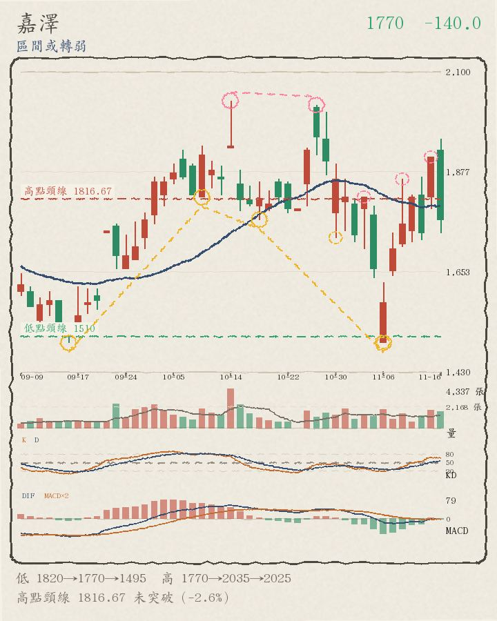
12:31 盤中 1770（-7.33%），比加權指數弱 3.04 個百分點、跌破月線 1801.5，離高點頸線 1816.67 還差 2.6%，轉折還沒走出明顯方向。
- 月線位置：現價 1770 在月線 1801.5 之下（-1.8%）；5 日線 1787 也在月線之下（短均在下）；月線向下
- 量能：以已過交易時間推估，今天成交量約是 20 日均量的 1.67 倍（爆量），比 20 日均量大不少；下跌卻量增，量價背離
- 關鍵價位：高點頸線 1816.67 還沒突破，差 2.6%；前一交易日高點 1910（低於 7.3%）；今天盤中高點 1950（低於 9.2%）；今天盤中低點 1740（高於 1.7%）
- 轉折結構：低點 1820、1770、1495 與高點 1770、2035、2025 都沒有明顯遞增，屬於區間震盪或轉弱；還沒確認的轉折低點 10-30 1730、11-06 1495；還沒確認的轉折高點 11-10 1860、11-13 1910（圖上虛線小圈）
聯亞 3081 上櫃
1900 -210.0（-9.95%）
區間或轉弱 盤中成交值 29.56 億・全榜第 52 名（上櫃第 11 名）・相對大盤 -5.66
好條件 0/7：無
不好條件 5/7：今日下跌、相對大盤弱、在月線之下、跌破昨日低點、月線下彎

12:31 盤中 1900（-9.95%），比加權指數弱 5.66 個百分點、跌破月線 2290，離高點頸線 2940 還差 35.4%，轉折還沒走出明顯方向。
- 月線位置：現價 1900 在月線 2290 之下（-17.0%）；5 日線 2093 也在月線之下（短均在下）；月線向下
- 量能：以已過交易時間推估，今天成交量約是 20 日均量的 0.61 倍（量縮），比 20 日均量少很多
- 關鍵價位：高點頸線 2940 還沒突破，差 35.4%；前一交易日高點 2220（低於 14.4%）；今天盤中高點 2015（低於 5.7%）；今天盤中低點 1900（高於 0.0%）
- 轉折結構：低點 2585、2365、1705 與高點 2950、3210、2795 都沒有明顯遞增，屬於區間震盪或轉弱；還沒確認的轉折低點 11-06 1705、11-13 2065；還沒確認的轉折高點 11-02 2465、11-12 2320（圖上虛線小圈）
量縮
↑ 回上方清單
技嘉 2376 上市
283 -1.0（-0.35%）
區間或轉弱 盤中成交值 29.38 億・全榜第 53 名（上市第 42 名）・相對大盤 +3.94
好條件 0/7：無
不好條件 3/7：今日下跌、在月線之下、月線下彎

12:31 盤中 283（-0.35%），比加權指數強 3.94 個百分點、跌破月線 330.725，離高點頸線 368.67 還差 23.2%，轉折還沒走出明顯方向。
- 月線位置：現價 283 在月線 330.725 之下（-14.4%）；5 日線 298.5 也在月線之下（短均在下）；月線向下
- 量能：以已過交易時間推估，今天成交量約是 20 日均量的 2.42 倍（爆量），比 20 日均量大不少；下跌卻量增，量價背離
- 關鍵價位：高點頸線 368.67 還沒突破，差 23.2%；前一交易日高點 295.5（低於 4.2%）；今天盤中高點 289（低於 2.1%）；今天盤中低點 280（高於 1.1%）
- 轉折結構：低點 358.5、344.5、282 與高點 396.5、363、367 都沒有明顯遞增，屬於區間震盪或轉弱；還沒確認的轉折低點 11-06 282、11-13 277.5；還沒確認的轉折高點 11-02 342、11-09 319（圖上虛線小圈）
力積電 6770 上市
54.4 -2.6（-4.56%）
區間或轉弱 盤中成交值 28.34 億・全榜第 54 名（上市第 43 名）・相對大盤 -0.27
好條件 0/7：無
不好條件 5/7：今日下跌、相對大盤弱、在月線之下、跌破昨日低點、月線下彎

12:31 盤中 54.4（-4.56%），比加權指數弱 0.27 個百分點、跌破月線 62.7，離高點頸線 74.33 還差 26.8%，轉折還沒走出明顯方向。
- 月線位置：現價 54.4 在月線 62.7 之下（-13.2%）；5 日線 57.78 也在月線之下（短均在下）；月線向下
- 量能：以已過交易時間推估，今天成交量約是 20 日均量的 0.61 倍（量縮），比 20 日均量少很多
- 關鍵價位：高點頸線 74.33 還沒突破，差 26.8%；前一交易日高點 58.5（低於 7.0%）；今天盤中高點 56.5（低於 3.7%）；今天盤中低點 53.5（高於 1.7%）
- 轉折結構：低點 70.5、63、49.35 與高點 78.1、73、63 都沒有明顯遞增，屬於區間震盪或轉弱；還沒確認的轉折低點 11-06 49.35、11-11 55.9；還沒確認的轉折高點 11-10 63、11-12 60.4（圖上虛線小圈）
量縮
↑ 回上方清單
事欣科 4916 上市
108.5 -4.0（-3.56%）
高點墊高、底部不穩 盤中成交值 27.02 億・全榜第 55 名（上市第 44 名）・相對大盤 +0.73
好條件 3/7：站上月線、月線向上、頭頭高
不好條件 1/7：今日下跌
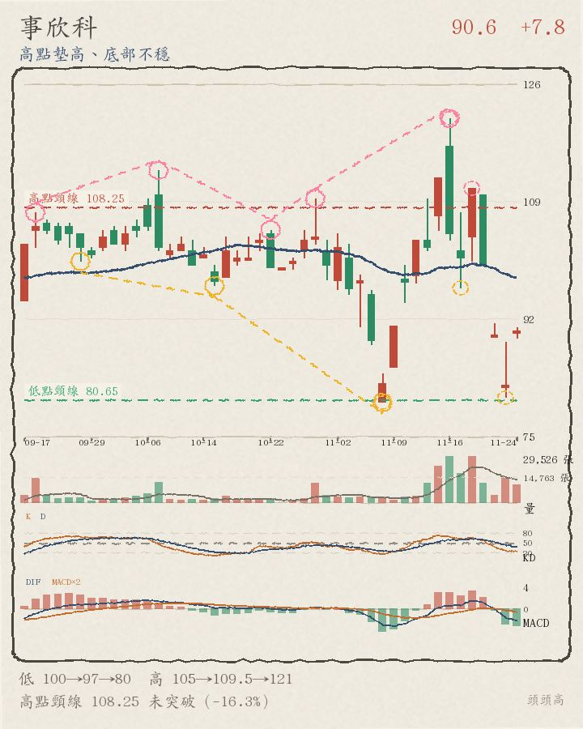
12:31 盤中 108.5（-3.56%），比加權指數強 0.73 個百分點、站上月線 99.55，離高點頸線 113 還差 4.0%，高點還在墊高（但底部沒同步墊高）。
- 月線位置：現價 108.5 在月線 99.55 之上（+9.0%）；5 日線 101.46 也在月線之上（短均在上）；月線向上
- 量能：以已過交易時間推估，今天成交量約是 20 日均量的 8.50 倍（爆量），比 20 日均量大不少；下跌卻量增，量價背離
- 關鍵價位：高點頸線 113 還沒突破，差 4.0%；前一交易日高點 112.5（低於 3.6%）；今天盤中高點 121（低於 10.3%）；今天盤中低點 106（高於 2.4%）
- 轉折結構：高點 113.5、105、109.5 墊高（頭頭高），但低點 100.5、97、80.3 沒有同步墊高；還沒確認的轉折低點 11-06 80.3；還沒確認的轉折高點 11-02 104.5、11-13 112.5（圖上虛線小圈）
精測 6510 上櫃
3005 -330.0（-9.90%）
高點墊高、底部不穩 盤中成交值 26.83 億・全榜第 56 名（上櫃第 12 名）・相對大盤 -5.61
好條件 2/7：站上月線、頭頭高
不好條件 4/7：今日下跌、相對大盤弱、跌破昨日低點、月線下彎
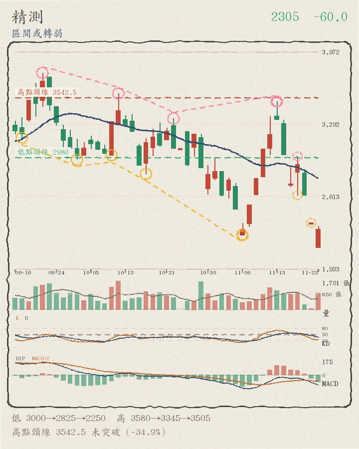
12:31 盤中 3005（-9.90%），比加權指數弱 5.61 個百分點、站上月線 2925.75，離高點頸線 3542.5 還差 15.2%，高點還在墊高（但底部沒同步墊高）。
- 月線位置：現價 3005 在月線 2925.75 之上（+2.7%）；5 日線 2982 也在月線之上（短均在上）；月線向下
- 量能：以已過交易時間推估，今天成交量約是 20 日均量的 1.42 倍（量增），比 20 日均量大不少；下跌卻量增，量價背離
- 關鍵價位：高點頸線 3542.5 還沒突破，差 15.2%；前一交易日高點 3505（低於 14.3%）；今天盤中高點 3330（低於 9.8%）；今天盤中低點 3005（高於 0.0%）
- 轉折結構：高點 3775、3580、3345 墊高（頭頭高），但低點 3000、2825、2250 沒有同步墊高；還沒確認的轉折低點 10-30 2635、11-06 2250；還沒確認的轉折高點 11-02 2980、11-13 3505（圖上虛線小圈）
富邦金 2881 上市
155.5 -6.0（-3.72%）
區間或轉弱 盤中成交值 26.27 億・全榜第 57 名（上市第 45 名）・相對大盤 +0.57
好條件 0/7：無
不好條件 5/7：今日下跌、在月線之下、貼近今日低點（1% 內）、跌破昨日低點、月線下彎
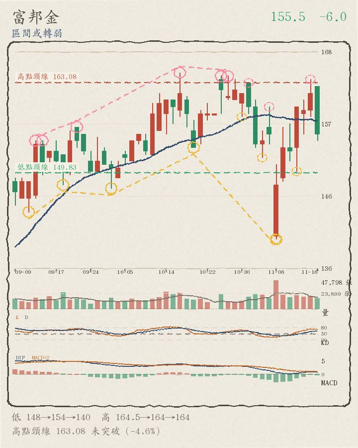
12:31 盤中 155.5（-3.72%），比加權指數強 0.57 個百分點、跌破月線 157.675，離高點頸線 163.08 還差 4.6%，轉折還沒走出明顯方向。
- 月線位置：現價 155.5 在月線 157.675 之下（-1.4%）；5 日線 157.3 也在月線之下（短均在下）；月線向下
- 量能：以已過交易時間推估，今天成交量約是 20 日均量的 1.08 倍（量平），比 20 日均量大一些
- 關鍵價位：高點頸線 163.08 還沒突破，差 4.6%；前一交易日高點 163.5（低於 4.9%）；今天盤中高點 162.5（低於 4.3%）；今天盤中低點 154.5（高於 0.6%）
- 轉折結構：低點 147.5、153.5、140 與高點 164.5、164、164 都沒有明顯遞增，屬於區間震盪或轉弱；還沒確認的轉折低點 11-06 140、11-11 150；還沒確認的轉折高點 11-05 159.5、11-13 163.5（圖上虛線小圈）
量平
↑ 回上方清單
頎邦 6147 上櫃
158.5 -13.0（-7.58%）
區間或轉弱 盤中成交值 26.1 億・全榜第 58 名（上櫃第 13 名）・相對大盤 -3.29
好條件 0/7：無
不好條件 5/7：今日下跌、相對大盤弱、在月線之下、跌破昨日低點、月線下彎

12:31 盤中 158.5（-7.58%），比加權指數弱 3.29 個百分點、跌破月線 187.075，離高點頸線 220 還差 28.0%，轉折還沒走出明顯方向。
- 月線位置：現價 158.5 在月線 187.075 之下（-15.3%）；5 日線 167.4 也在月線之下（短均在下）；月線向下
- 量能：以已過交易時間推估，今天成交量約是 20 日均量的 0.91 倍（量平），比 20 日均量少一些
- 關鍵價位：高點頸線 220 還沒突破，差 28.0%；前一交易日高點 177（低於 10.5%）；今天盤中高點 170（低於 6.8%）；今天盤中低點 155（高於 2.3%）
- 轉折結構：低點 211、194.5、142 與高點 238、217、223 都沒有明顯遞增，屬於區間震盪或轉弱；還沒確認的轉折低點 11-06 142；還沒確認的轉折高點 11-12 180（圖上虛線小圈）
量平
↑ 回上方清單
富世達 6805 上市
1830 -145.0（-7.34%）
區間或轉弱 盤中成交值 25.69 億・全榜第 59 名（上市第 46 名）・相對大盤 -3.05
好條件 0/7：無
不好條件 5/7：今日下跌、相對大盤弱、在月線之下、跌破昨日低點、月線下彎

12:31 盤中 1830（-7.34%），比加權指數弱 3.05 個百分點、跌破月線 2173.25，離高點頸線 2505 還差 26.9%，轉折還沒走出明顯方向。
- 月線位置：現價 1830 在月線 2173.25 之下（-15.8%）；5 日線 1970 也在月線之下（短均在下）；月線向下
- 量能：以已過交易時間推估，今天成交量約是 20 日均量的 1.06 倍（量平），比 20 日均量大一些
- 關鍵價位：高點頸線 2505 還沒突破，差 26.9%；前一交易日高點 2150（低於 14.9%）；今天盤中高點 1990（低於 8.0%）；今天盤中低點 1795（高於 1.9%）
- 轉折結構：低點 2065、2200、1670 與高點 2510、2515、2490 都沒有明顯遞增，屬於區間震盪或轉弱；還沒確認的轉折低點 10-30 2225、11-09 1670；還沒確認的轉折高點 10-29 2490、11-13 2150（圖上虛線小圈）
量平
↑ 回上方清單
禾伸堂 3026 上市
461 -51.0（-9.96%）
區間或轉弱 盤中成交值 23.99 億・全榜第 60 名（上市第 47 名）・相對大盤 -5.67
好條件 0/7：無
不好條件 6/7：跌破前低、今日下跌、相對大盤弱、在月線之下、跌破昨日低點、月線下彎

12:31 盤中 461（-9.96%），比加權指數弱 5.67 個百分點、跌破月線 649.025，離高點頸線 871 還差 47.1%，轉折還沒走出明顯方向。
- 月線位置：現價 461 在月線 649.025 之下（-29.0%）；5 日線 517.4 也在月線之下（短均在下）；月線向下
- 量能：以已過交易時間推估，今天成交量約是 20 日均量的 0.56 倍（量縮），比 20 日均量少很多
- 關鍵價位：已跌破前一個轉折低點；高點頸線 871 還在現價上方 47.1%；前一交易日高點 548（低於 15.9%）；今天盤中高點 505（低於 8.7%）；今天盤中低點 461（高於 0.0%）
- 轉折結構：低點 726、704、475.5 與高點 881、888、859 都沒有明顯遞增，屬於區間震盪或轉弱；還沒確認的轉折低點 11-06 475.5、11-13 504；還沒確認的轉折高點 10-29 778、11-12 571（圖上虛線小圈）
中信金 2891 上市
78 -0.7（-0.89%）
高點墊高、底部不穩 盤中成交值 23.96 億・全榜第 61 名（上市第 48 名）・相對大盤 +3.40
好條件 4/7：站上月線、月線向上、頭頭高、突破頸線
不好條件 2/7：今日下跌、貼近今日低點（1% 內）

12:31 盤中 78（-0.89%），比加權指數強 3.40 個百分點、站上月線 74.63，已突破高點頸線 76.14，高點還在墊高（但底部沒同步墊高）。
- 月線位置：現價 78 在月線 74.63 之上（+4.5%）；5 日線 75.68 也在月線之上（短均在上）；月線向上
- 量能：以已過交易時間推估，今天成交量約是 20 日均量的 0.88 倍（量平），比 20 日均量少一些
- 關鍵價位：高點頸線 76.14 已站上；前一交易日高點 79.8（低於 2.3%）；今天盤中高點 80.6（低於 3.2%）；今天盤中低點 77.3（高於 0.9%）
- 轉折結構：高點 76.9、76.4、76.2 墊高（頭頭高），但低點 67.3、73.8、67.5 沒有同步墊高；還沒確認的轉折低點 11-06 67.5、11-11 72.6；還沒確認的轉折高點 11-09 76.2、11-13 79.8（圖上虛線小圈）
信驊 5274 上櫃
10800 -1200.0（-10.00%）
區間或轉弱 盤中成交值 23.54 億・全榜第 62 名（上櫃第 14 名）・相對大盤 -5.71
好條件 0/7：無
不好條件 5/7：今日下跌、相對大盤弱、在月線之下、跌破昨日低點、月線下彎
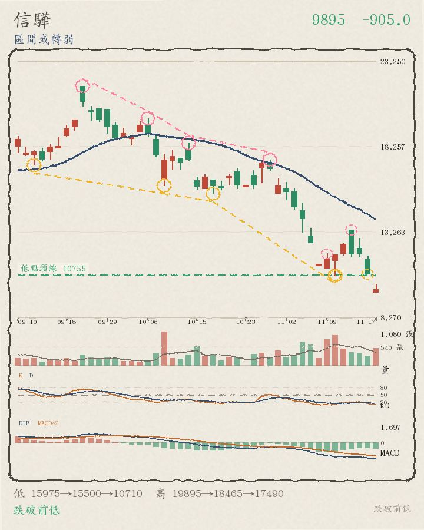
12:31 盤中 10800（-10.00%），比加權指數弱 5.71 個百分點、跌破月線 14585，轉折還沒走出明顯方向。
- 月線位置：現價 10800 在月線 14585 之下（-25.9%）；5 日線 12029 也在月線之下（短均在下）；月線向下
- 量能：以已過交易時間推估，今天成交量約是 20 日均量的 0.65 倍（量縮），比 20 日均量少很多
- 關鍵價位：前一交易日高點 12880（低於 16.1%）；今天盤中高點 11875（低於 9.1%）；今天盤中低點 10800（高於 0.0%）
- 轉折結構：低點 15975、15500、10710 與高點 19895、18465、17490 都沒有明顯遞增，屬於區間震盪或轉弱；還沒確認的轉折低點 11-10 10710、11-13 11795；還沒確認的轉折高點 11-09 11990、11-12 13375（圖上虛線小圈）
量縮
↑ 回上方清單
高力 8996 上市
1300 -140.0（-9.72%）
區間或轉弱 盤中成交值 23.34 億・全榜第 63 名（上市第 49 名）・相對大盤 -5.43
好條件 0/7：無
不好條件 5/7：今日下跌、相對大盤弱、在月線之下、跌破昨日低點、月線下彎

12:31 盤中 1300（-9.72%），比加權指數弱 5.43 個百分點、跌破月線 1461.5，離高點頸線 1568.33 還差 17.1%，轉折還沒走出明顯方向。
- 月線位置：現價 1300 在月線 1461.5 之下（-11.1%）；5 日線 1402 也在月線之下（短均在下）；月線向下
- 量能：以已過交易時間推估，今天成交量約是 20 日均量的 0.53 倍（量縮），比 20 日均量少很多
- 關鍵價位：高點頸線 1568.33 還沒突破，差 17.1%；前一交易日高點 1550（低於 16.1%）；今天盤中高點 1410（低於 7.8%）；今天盤中低點 1300（高於 0.0%）
- 轉折結構：低點 1470、1455、1165 與高點 1665、1800、1770 都沒有明顯遞增，屬於區間震盪或轉弱；還沒確認的轉折低點 11-06 1165、11-12 1360；還沒確認的轉折高點 11-02 1535、11-12 1575（圖上虛線小圈）
量縮
↑ 回上方清單
冠西電 2466 上市
408 +15.0（+3.82%）
上升趨勢（底底高＋頭頭高） 盤中成交值 23.17 億・全榜第 64 名（上市第 50 名）・相對大盤 +8.11
好條件 6/7：站上月線、月線向上、底底高、頭頭高、突破頸線、攻擊量（量增＋上漲）
不好條件 0/7：無
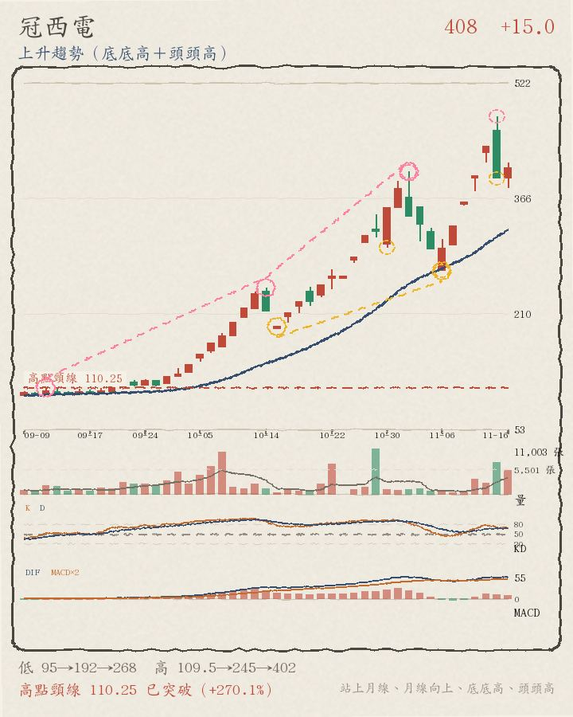
12:31 盤中 408（+3.82%），比加權指數強 8.11 個百分點、站上月線 313.875，已突破高點頸線 110.25，轉折結構仍是底底高＋頭頭高。
- 月線位置：現價 408 在月線 313.875 之上（+30.0%）；5 日線 383.2 也在月線之上（短均在上）；月線向上
- 量能：以已過交易時間推估，今天成交量約是 20 日均量的 3.56 倍（爆量），比 20 日均量大不少；上漲又量增，量價配合
- 關鍵價位：高點頸線 110.25 已站上；前一交易日高點 477（低於 14.5%）；今天盤中高點 413.5（低於 1.3%）；今天盤中低點 380.5（高於 7.2%）
- 轉折結構：低點 94.7、192.5、268 一路墊高、高點 109.5、245、402 也一路墊高，是底底高＋頭頭高；還沒確認的轉折低點 11-06 268、11-13 393；還沒確認的轉折高點 11-03 402、11-13 477（圖上虛線小圈）
聯一光 3441 上櫃
182.5 -15.5（-7.83%）
高點墊高、底部不穩 盤中成交值 20.72 億・全榜第 65 名（上櫃第 15 名）・相對大盤 -3.54
好條件 2/7：頭頭高、突破頸線
不好條件 4/7：今日下跌、相對大盤弱、在月線之下、月線下彎

12:31 盤中 182.5（-7.83%），比加權指數弱 3.54 個百分點、跌破月線 194.575，已突破高點頸線 142.25，高點還在墊高（但底部沒同步墊高）。
- 月線位置：現價 182.5 在月線 194.575 之下（-6.2%）；5 日線 181.6 也在月線之下（短均在下）；月線向下
- 量能：以已過交易時間推估，今天成交量約是 20 日均量的 2.11 倍（爆量），比 20 日均量大不少；下跌卻量增，量價背離
- 關鍵價位：高點頸線 142.25 已站上；前一交易日高點 209.5（低於 12.9%）；今天盤中高點 205（低於 11.0%）；今天盤中低點 180.5（高於 1.1%）
- 轉折結構：高點 201、280.5、293.5 墊高（頭頭高），但低點 172.5、213.5、132.5 沒有同步墊高；還沒確認的轉折低點 10-30 172、11-06 132.5；還沒確認的轉折高點 11-13 209.5（圖上虛線小圈）
力旺 3529 上櫃
2225 -115.0（-4.91%）
區間或轉弱 盤中成交值 20.67 億・全榜第 66 名（上櫃第 16 名）・相對大盤 -0.62
好條件 0/7：無
不好條件 5/7：今日下跌、相對大盤弱、在月線之下、跌破昨日低點、月線下彎

12:31 盤中 2225（-4.91%），比加權指數弱 0.62 個百分點、跌破月線 2376.25，離高點頸線 2806.67 還差 20.7%，轉折還沒走出明顯方向。
- 月線位置：現價 2225 在月線 2376.25 之下（-6.4%）；5 日線 2208 也在月線之下（短均在下）；月線向下
- 量能：以已過交易時間推估，今天成交量約是 20 日均量的 1.25 倍（量增），比 20 日均量大不少；下跌卻量增，量價背離
- 關鍵價位：高點頸線 2806.67 還沒突破，差 20.7%；前一交易日高點 2425（低於 8.2%）；今天盤中高點 2280（低於 2.4%）；今天盤中低點 2140（高於 4.0%）
- 轉折結構：低點 2530、2470、1825 與高點 2875、3635、2675 都沒有明顯遞增，屬於區間震盪或轉弱；還沒確認的轉折低點 11-04 2005、11-06 1825；還沒確認的轉折高點 10-29 2675、11-13 2425（圖上虛線小圈）
量增
↑ 回上方清單
世紀* 5314 上櫃
24.65 -0.5（-1.79%）
區間或轉弱 盤中成交值 19.77 億・全榜第 67 名（上櫃第 17 名）・相對大盤 +2.50
好條件 2/7：站上月線、突破頸線
不好條件 2/7：今日下跌、月線下彎
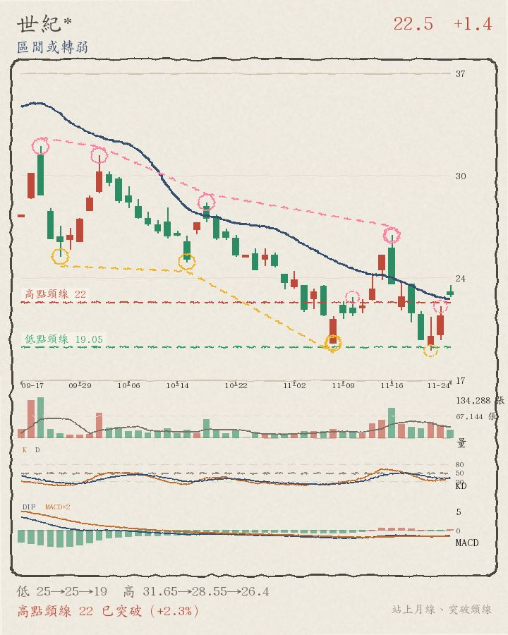
12:31 盤中 24.65（-1.79%），比加權指數強 2.50 個百分點、站上月線 23.813，已突破高點頸線 23.57，轉折還沒走出明顯方向。
- 月線位置：現價 24.65 在月線 23.813 之上（+3.5%）；5 日線 22.46 也在月線之下（短均在下）；月線向下
- 量能：以已過交易時間推估，今天成交量約是 20 日均量的 4.77 倍（爆量），比 20 日均量大不少；下跌卻量增，量價背離
- 關鍵價位：高點頸線 23.57 已站上；前一交易日高點 25.1（低於 1.8%）；今天盤中高點 26.4（低於 6.6%）；今天盤中低點 23.75（高於 3.8%）
- 轉折結構：低點 25、24.65、19.3 與高點 32.25、31.65、28.55 都沒有明顯遞增，屬於區間震盪或轉弱；還沒確認的轉折低點 11-03 21.4、11-06 19.3；還沒確認的轉折高點 11-10 22.3、11-13 25.1（圖上虛線小圈）
德宏 5475 上櫃
184.5 -26.5（-12.56%）
高點墊高、底部不穩 盤中成交值 18.43 億・全榜第 68 名（上櫃第 18 名）・相對大盤 -8.27
好條件 1/7：頭頭高
不好條件 5/7：今日下跌、相對大盤弱、在月線之下、跌破昨日低點、月線下彎
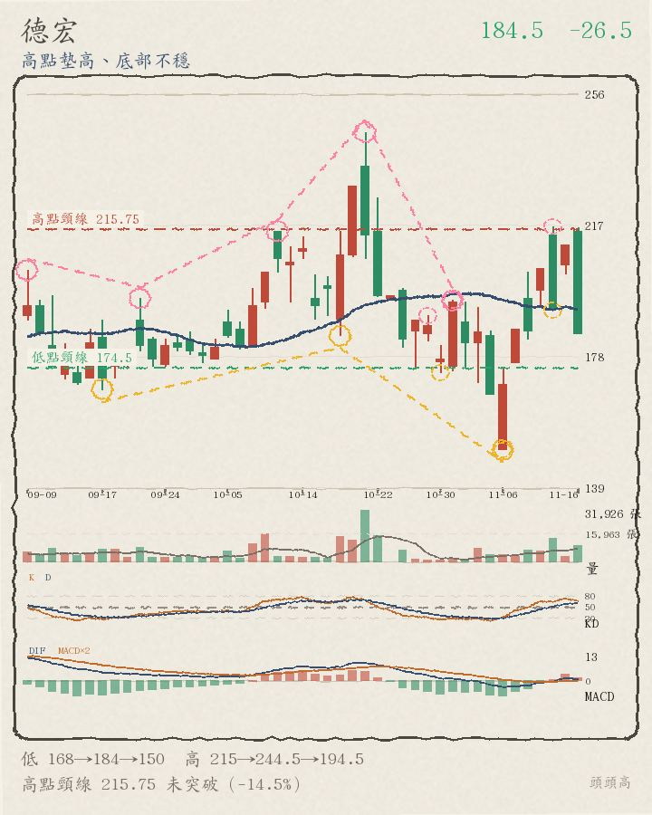
12:31 盤中 184.5（-12.56%），比加權指數弱 8.27 個百分點、跌破月線 192.6，離高點頸線 215.75 還差 14.5%，高點還在墊高（但底部沒同步墊高）。
- 月線位置：現價 184.5 在月線 192.6 之下（-4.2%）；5 日線 195.7 也在月線之上（短均在上）；月線向下
- 量能：以已過交易時間推估，今天成交量約是 20 日均量的 1.71 倍（爆量），比 20 日均量大不少；下跌卻量增，量價背離
- 關鍵價位：高點頸線 215.75 還沒突破，差 14.5%；前一交易日高點 211（低於 12.6%）；今天盤中高點 216（低於 14.6%）；今天盤中低點 184.5（高於 0.0%）
- 轉折結構：高點 215、244.5、194.5 墊高（頭頭高），但低點 168、184、150 沒有同步墊高；還沒確認的轉折低點 11-06 150、11-12 191.5；還沒確認的轉折高點 11-02 194.5、11-12 216.5（圖上虛線小圈）
大甲 2221 上櫃
159 +8.0（+5.30%）
上升趨勢（底底高＋頭頭高） 盤中成交值 16.64 億・全榜第 69 名（上櫃第 19 名）・相對大盤 +9.59
好條件 6/7：站上月線、底底高、頭頭高、突破頸線、攻擊量（量增＋上漲）、守住今日高檔（距今日高點 1% 內）
不好條件 1/7：月線下彎
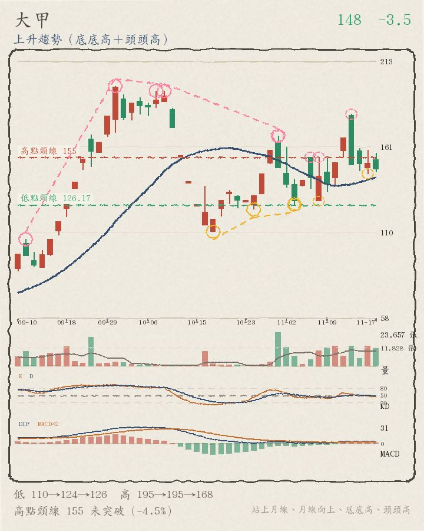
12:31 盤中 159（+5.30%），比加權指數強 9.59 個百分點、站上月線 139.925，已突破高點頸線 155，轉折結構仍是底底高＋頭頭高。
- 月線位置：現價 159 在月線 139.925 之上（+13.6%）；5 日線 151.8 也在月線之上（短均在上）；月線向下
- 量能：以已過交易時間推估，今天成交量約是 20 日均量的 2.05 倍（爆量），比 20 日均量大不少；上漲又量增，量價配合
- 關鍵價位：高點頸線 155 已站上；前一交易日高點 160.5（低於 0.9%）；今天盤中高點 159.5（低於 0.3%）；今天盤中低點 145（高於 9.7%）
- 轉折結構：低點 110、123.5、126.5 一路墊高、高點 195、195、168 也一路墊高，是底底高＋頭頭高；還沒確認的轉折低點 11-06 128.5、11-13 147；還沒確認的轉折高點 11-06 155、11-12 181（圖上虛線小圈）
漢測 7856 上櫃
2380 -190.0（-7.39%）
區間或轉弱 盤中成交值 15.42 億・全榜第 70 名（上櫃第 20 名）・相對大盤 -3.10
好條件 0/7：無
不好條件 5/7：今日下跌、相對大盤弱、在月線之下、跌破昨日低點、月線下彎

12:31 盤中 2380（-7.39%），比加權指數弱 3.10 個百分點、跌破月線 3050.25，轉折還沒走出明顯方向。
- 月線位置：現價 2380 在月線 3050.25 之下（-22.0%）；5 日線 2605 也在月線之下（短均在下）；月線向下
- 量能：以已過交易時間推估，今天成交量約是 20 日均量的 1.90 倍（爆量），比 20 日均量大不少；下跌卻量增，量價背離
- 關鍵價位：前一交易日高點 2945（低於 19.2%）；今天盤中高點 2635（低於 9.7%）；今天盤中低點 2315（高於 2.8%）
- 轉折結構：低點 3155、2270、2270 與高點 5445、4630、3750 都沒有明顯遞增，屬於區間震盪或轉弱；還沒確認的轉折低點 11-09 2270、11-13 2520；還沒確認的轉折高點 10-29 3595、11-12 3030（圖上虛線小圈）